Caso de Estudio Real • Distribuidora Mayorista B2B
Implementación de Infraestructura Tecnológica Comercial y de Almacén para Distribuidora Mayorista
Expediente de proyecto para Distribuidora Ecuménico, mayorista de sazonadores, especias y abarrotes que abastece a mercados y bodegas del cono sur de Lima. Proponemos ordenar su almacén, controlar pedidos e inventario con un sistema de gestión de almacén (WMS) ligero y planificar el reparto para que cada pedido salga completo y a tiempo.
MRJAFCAMPor el equipo del proyectoIngeniería de Software & Gestión Logística TI10 capítulos · — min de lectura
1 a 3 hArmar los pedidos de una zona hoy; meta: -40%
4 a 6Veces por semana que el stock registrado no aparece
7 a 8 a. m.Salida real del reparto; objetivo: 6:00
3 a 4Segundas vueltas al mes por pedidos incompletos
Problema General
Sobrecostos en la operación y retrasos recurrentes durante las etapas de preparación (picking y packing) y entrega de pedidos, generados por una infraestructura de almacenamiento poco tecnificada, métodos de control manuales y limitaciones logísticas en piso.
Trabajo de campo · Operación real
Así trabaja hoy la distribuidora
Fotografías tomadas por el equipo en el almacén y en la unidad de reparto de Distribuidora Ecuménico. Muestran el punto de partida del proyecto: mercadería en el piso, carga sin orden por ruta y un control que depende del papel y de la memoria del personal.
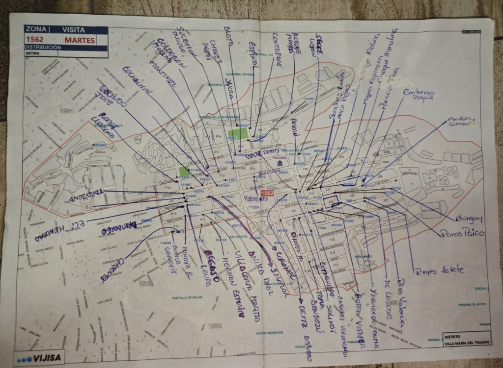
RepartoHoja de ruta marcada a mano sobre un plano impreso
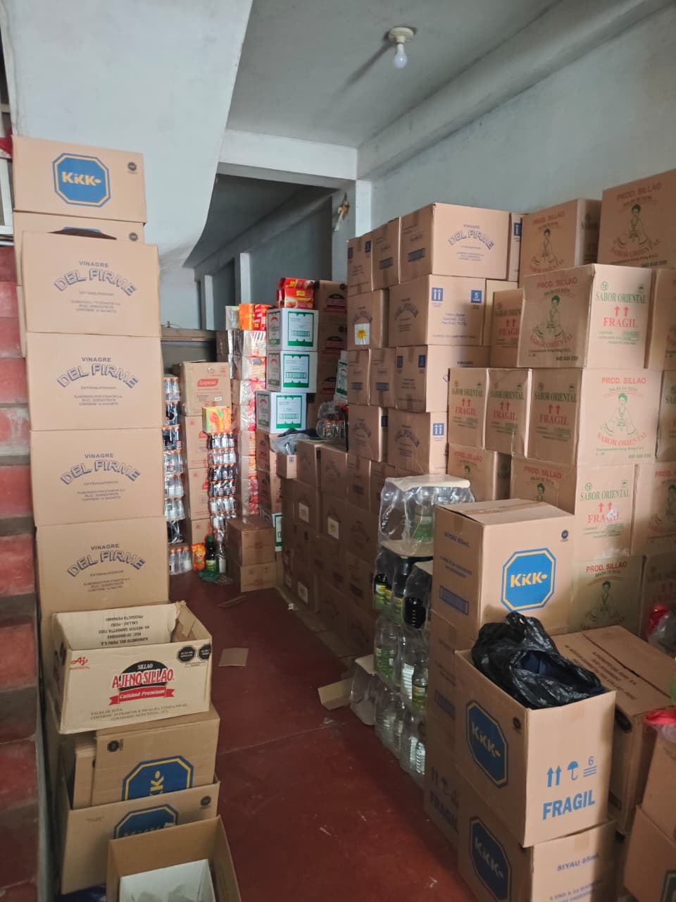
AlmacénCajas apiladas en el piso, sin racks ni zonas
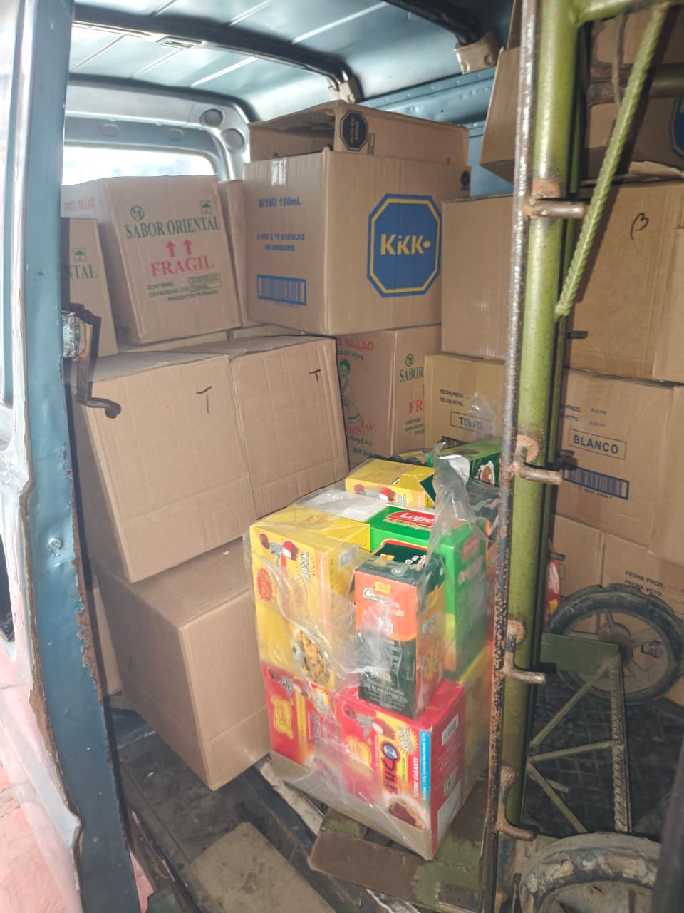
Unidad de repartoCarga sin divisiones junto a la carretilla
Gerencia, supervisión, operarios y reparto: lo que marcó cada perfil en la escala Likert, lo que respondió con sus propias palabras y cómo confirma el diagnóstico.
Quiénes somos, qué frena hoy al almacén y qué nos proponemos lograr en seis meses.
MRJAFCAMPor el equipo del proyecto— min de lectura
Figura 2: Almacenamiento directo a nivel de piso y pasillo saturado (Estado AS-IS)
1.1 Información General y Modelo Comercial
La empresa bajo análisis opera bajo el nombre comercial de "Distribuidora Ecuménico", desempeñándose como intermediaria mayorista de productos de consumo masivo con foco en sazonadores, especias y abarrotes, proveyendo al canal tradicional de puestos de mercado y bodegas minoristas en distritos del cono sur.
1.2 Diagnóstico Situacional y Planteamiento del Problema
Diagnóstico operativo: Se evidencia una brecha entre el inventario registrado en el sistema y las existencias físicas en almacén, lo que dificulta la localización inmediata de los productos al preparar los pedidos.
Causas principales: Falta de codificación técnica en los racks de almacenamiento y ausencia de un sistema que conecte las labores de piso con el control de inventario.
Consecuencias directas: Tiempos excesivos en la búsqueda manual de mercadería, descuadres continuos de stock y retrasos en las salidas de las rutas de despacho.
Problema General
Sobrecostos en la operación y retrasos recurrentes durante las etapas de preparación (picking y packing) y entrega de pedidos, generados por una infraestructura de almacenamiento poco tecnificada, métodos de control manuales y limitaciones logísticas en piso.
1.3 Alineación Estratégica, Justificación y ROI
Transición operativa: La propuesta guía la evolución del almacén desde un esquema de trabajo manual y disperso hacia un modelo ágil, estructurado y con capacidad de respuesta comercial.
Integración OPM: La gestión organizacional de proyectos asegura que la asignación de recursos e infraestructura respalde de forma directa los planes de crecimiento de la empresa.
Factores de inicio: La iniciativa atiende la necesidad de estabilizar las labores diarias, optimizar el esfuerzo del personal y cumplir con los tiempos de atención requeridos por el mercado.
Generación de valor: El proyecto asegura un retorno de inversión predecible al transformar las ineficiencias de preparación en ahorros netos para el negocio.
Beneficios tangibles: Reducción de sobretiempos laborales, disminución de mermas por productos vencidos u omitidos en anaqueles y un incremento notable en el volumen de pedidos despachados por jornada.
Beneficios intangibles: Mayor prestigio comercial ante los clientes por entregas completas y a tiempo, mejor ambiente laboral para el equipo de almacén y bases sólidas para la expansión a largo plazo.
1.4 Objetivos del Proyecto
Objetivo General (SMART): Reducir en un 40 % el tiempo de preparación de pedidos (picking), de 45 a 27 minutos por pedido, y consolidar despachos puntuales y confiables, con la salida de la unidad de reparto a las 6:00 a. m. y menos del 1 % de incidencias en despacho, mediante la tecnificación del almacén con racks, la implementación de un sistema WMS y la estandarización de los procesos logísticos, en un plazo de 6 meses.
Objetivos Específicos (SMART):
Instalar racks metálicos y codificar el 100 % de las ubicaciones del almacén por pasillo, columna y nivel, con las zonas A, B y C delimitadas y el registro de lotes y vencimientos (PEPS) en funcionamiento, al término del tercer mes.
Implementar el sistema WMS para registrar el 100 % de los pedidos, ingresos y salidas, y elevar la exactitud del inventario de 78 % a 99 %, al término del cuarto mes.
Elaborar los manuales de procedimientos y capacitar al 100 % del personal de almacén y reparto en el uso del WMS y en los nuevos flujos de trabajo antes de la salida en vivo, al término del quinto mes.
Consolidar la carga por ruta la tarde anterior y ordenar las visitas con el software de mapeo digital, para que la unidad de reparto salga a las 6:00 a. m. en al menos 9 de cada 10 días de reparto al término del sexto mes.
El desglose de cada criterio SMART se presenta en el capítulo 9.
1.5 Portafolio de Productos, Alcance Preliminar y Viabilidad
El catálogo comercial reúne productos de rotación continua, margen unitario competitivo y diversas presentaciones clasificadas en:
Categoría de Producto
Descripción y Variantes
Sazonadores y Colorantes
Sibarita, Tuco, Palillo en tiras por 42 unidades, formato económico y sobres individuales.
Especias Secas
Pimienta, comino, orégano entero y molido (marcas Verdecito y Valle Verde), además de mezclas culinarias.
Ajíes Procesados
Ají panca y ají amarillo en pasta, comercializados en unidades sueltas y empaques por doce.
Líquidos y Esencias
Vinagres (presentaciones desde 125 ml hasta 1000 ml y sachets), sillao y esencia de vainilla.
MRJAFCAM
Escrito por
Modesto Romero Bryan Adam, Julca Achas Cristian Sebastian, Felix Cecinario Hernan y Avalos Mendoza Jeshua Raul
Marco Contextual, Entorno Organizacional y Evidencias de Campo
Entrevistas en piso, fotografías reales y el contraste entre el almacén de hoy (AS-IS) y el que proponemos (TO-BE).
MRJAFCAMPor el equipo del proyecto— min de lectura
Figura 1: Comprobante y nota de pedido manual en talonario físico (Estado AS-IS)
2.1 Factores Ambientales de la Empresa (EEFs)
Escala organizacional: Al ser una distribuidora mayorista de mediana envergadura, el entorno operativo demanda soluciones tecnológicas ligeras y de rápida adopción que se acoplen a la rutina comercial sin frenar las ventas diarias.
Infraestructura tecnológica: Se carece de un sistema formal de gestión de almacén (WMS), lo que obliga a depender de registros manuales y comprobantes en papel.
Clima físico y operativo: La falta de orden y zonificación en el almacén dificulta la ubicación inmediata de los productos, propicia descuadres en el inventario y genera tensión en las jornadas de despacho.
Condiciones de seguridad y resguardo: La disposición abierta de los productos eleva la vulnerabilidad ante deterioros y pérdidas no identificadas, haciendo necesaria la instalación de cámaras de seguridad periféricas como respaldo al ordenamiento de los racks.
2.2 Activos de los Procesos de la Organización (OPAs)
Normativa y procedimientos: Inexistencia de manuales operativos y protocolos estandarizados para la recepción, almacenamiento y despacho de mercadería; las actividades se ejecutan según el criterio empírico de cada trabajador.
Gestión del conocimiento: Ausencia de registros estructurados de incidentes o lecciones aprendidas. El control sobre la ubicación de los lotes y su rotación descansa casi exclusivamente en la memoria de los operarios con mayor tiempo en la empresa.
Metodología de Trabajo de Campo
2.3 Metodología de Levantamiento de Información (Entrevistas Estructuradas)
Para asegurar que el diagnóstico del entorno interno y la propuesta tecnológica (TO-BE) respondan con fidelidad a la realidad operativa de la empresa, se diseñó un instrumento de entrevistas estructuradas aplicado in situ. Las preguntas fueron formuladas en lenguaje cotidiano para evitar sesgos técnicos e intimidación en el personal, permitiendo al equipo del proyecto traducir estas respuestas a requerimientos concretos de ingeniería logística.
1
Bloque 1: Entrevista a Gerencia y Jefatura de Operaciones (Mando Estratégico)
¿Siente que se está perdiendo rentabilidad por demoras al armar los pedidos o por productos que no se encuentran a tiempo para despachar?
¿Con qué frecuencia la computadora (o la nota de venta) indica que hay stock de un producto, pero al buscarlo físicamente en el almacén no está?
Para esta mejora, ¿buscan una solución ágil y de bajo costo que se implemente poco a poco sin detener las ventas diarias, o disponen de un presupuesto para una remodelación completa e inmediata?
2
Bloque 2: Entrevista a Supervisión de Almacén (Mando Táctico)
Cuando llega mercadería nueva, ¿existe alguna regla escrita que indique en qué zona colocarla, o el personal la ubica donde encuentra espacio libre?
Para registrar lo que entra y lo que sale cada día, ¿se apoyan en algún sistema informático o todo el control se lleva de manera manual en cuadernos y talonarios?
¿Tienen alguna norma estricta para asegurar que la mercadería más antigua salga primero y no se venza, o los estibadores sacan lo que está más a la mano?
Si ingresa un trabajador nuevo mañana, ¿existe algún manual que le explique cómo hacer las cosas, o aprende únicamente observando a los más antiguos?
3
Bloque 3: Entrevista a Operarios de Picking y Recepción (Nivel Operativo)
¿Terminan su turno con dolores de espalda o agotamiento físico por tener que agacharse constantemente a sacar cajas pesadas desde el piso?
¿Se han presentado accidentes donde botellas de líquidos se derramen y arruinen otros productos por tener la mercadería mezclada en los pasillos?
Si el proyecto les entrega un sistema que les indique en qué ubicación está cada producto para no tener que anotar a mano ni buscar de memoria, ¿sienten que les ayudaría en su día a día o les complicaría el trabajo?
Evidencias de Campo del Estado AS-IS (Inspección y Documentos Reales)
Haz clic en cualquier imagen para verla en pantalla completa con alta resolución.
Figura 1Preventa Manual
Talonario manual de notas de pedido en papel
Análisis de evidencia: Se evidencia el llenado manual con lapicero para el puesto del Mercado Jorge Chávez (líneas Sibarita, Tuco, Vinagres, sillao). Sin integración en tiempo real; los precios, totales (S/ 60.00) y cobros de flete (S/ 5.00) se calculan a mano con alto riesgo de error aritmético y descuadre posterior.
Figura 2Infraestructura AS-IS
Apilamiento directo a nivel de piso y pasillo saturado
Análisis de evidencia: Almacén sin racks industriales verticales. Se observan cajas de Vinagre "Del Firme", condimentos "Lopeza" y botellas plásticas apiladas en el suelo compartiendo pasillo con carretillas manuales ("diablos"). Genera fatiga lumbar en operarios y riesgo de mermas por aplastamiento o derrames.
Figura 3Logística de Entrega
Hoja de ruta física con asignación manual de reparto
Análisis de evidencia: Zona 1562 (distrito de Villa María del Triunfo - reparto de los martes). Los clientes y bodegas fueron trazados a mano alzada con lapicero sobre una lámina impresa. La ausencia de un software de ruteo óptimo genera demoras en las salidas matutinas y congestión en horas punta.
Figura 4Estructura Organizacional
Diagrama Estructural del Entorno Interno
Análisis de evidencia: Mapeo de factores internos de la organización según el marco PMBOK: correlación entre cultura, activos de procesos empíricos, gobernanza y limitaciones de hardware que sustentan la justificación técnica del proyecto.
Figura 5Almacén AS-IS
Columnas de cajas apiladas en el piso del almacén
Análisis de evidencia: Cajas de vinagre Del Firme, sillao y bidones apilados en columnas directamente sobre el piso, sin racks ni zonas señalizadas. Los productos líquidos y secos comparten el mismo espacio y la ubicación de cada lote depende de la memoria del personal.
Figura 6Unidad de Reparto
Carga del furgón sin divisiones internas
Análisis de evidencia: Cajas marcadas a mano y paquetes envueltos en plástico se apilan dentro del furgón junto a la carretilla manual. La carga no se ordena según la secuencia de entrega, por lo que el chofer debe buscar los bultos de cada cliente durante la ruta.
Figura 7Despacho
Bultos abiertos dentro de la unidad de reparto
Análisis de evidencia: Botellas de sillao y cajas de sazonadores viajan juntas en cajas abiertas, sin rotulado por cliente. Esta disposición eleva el riesgo de derrames y de pedidos entregados incompletos o con productos equivocados.
Figura 8Control Manual
Hoja de consolidación de carga anotada a mano
Análisis de evidencia: La salida de mercadería se consolida en una hoja de papel: producto, presentación y cantidad contada con palotes, más el total valorizado. Es el único registro de lo que sale en la unidad y no se contrasta con un inventario digital.
2.4 Diagnóstico AS-IS frente al Impacto TO-BE en el Entorno Interno
A partir de las entrevistas estructuradas y las evidencias de campo recabadas, se sistematiza la comparación entre el estado actual empírico y el modelo tecnificado objetivo:
Factor Interno (PMBOK)
Situación Actual (AS-IS)
Transformación con el Proyecto (TO-BE)
1. Activos de procesos
Procedimientos empíricos, notas de venta físicas y preparación de pedidos guiada por intuición.
Procedimientos operativos estandarizados (SOP) para picking, packing y control de carga.
2. Documentación y gobernanza
Instrucciones verbales, sin manuales de funciones ni políticas escritas de almacenamiento.
Políticas formales PEPS (primeras entradas, primeras salidas), manual de uso de racks y normas de calidad.
3. Activos de datos
Anotaciones en talonarios físicos de papel, con escasa o nula trazabilidad de movimientos.
Catálogo maestro digitalizado, codificación de barras por producto y registro sistemático de mermas.
4. Activos de conocimiento
Conocimiento tácito y dependiente de la memoria de los trabajadores más antiguos.
Conocimiento formalizado: señalización en estanterías, mapas de ubicación y guías de operación.
5. Seguridad y salud
Sobreesfuerzo físico por carga manual y riesgo de contaminación cruzada por cercanía de secos y líquidos.
Separación física de productos secos y líquidos, uso continuo de EPP y apoyo de transpaletas mecánicas.
6. Cultura organizacional
Toma de decisiones centralizada y enfoque reactivo enfocado únicamente en resolver la urgencia del día.
Cultura de mejora continua, mayor autonomía operativa en piso y cumplimiento de metas diarias de despacho.
7. Distribución geográfica
Almacén único con salidas no planificadas que coinciden con horarios de alta congestión vehicular.
Planificación y consolidación temprana de rutas para despacho matutino antes del pico de tráfico.
8. Infraestructura física
Apilamiento directo en piso, anaqueles rústicos y unidad de transporte sin divisiones internas.
Racks industriales de aprovechamiento vertical, pasillos señalizados y furgón acondicionado para reparto.
9. Software e informática
Gestión sin sistemas WMS o ERP; control enteramente manual soportado en planillas de papel.
Sistema WMS ligero para registrar los pedidos y validar el inventario en tiempo real.
10. Disponibilidad de recursos
Equipo de almacén saturado de tareas múltiples y asignación de presupuesto limitada a emergencias.
Inversión escalonada y programada, provisión homologada de insumos y cuadrillas con funciones claras.
11. Competencia del personal
Sólida experiencia práctica en el rubro, pero sin capacitación en técnicas formales de logística de almacén.
Programa de capacitación en rotación PEPS, manipulación con equipos de carga y uso del sistema WMS.
MRJAFCAM
Escrito por
Modesto Romero Bryan Adam, Julca Achas Cristian Sebastian, Felix Cecinario Hernan y Avalos Mendoza Jeshua Raul
Quién decide, quién opera y quién recibe: poder, interés, prominencia y la matriz RACI del proyecto.
MRJAFCAMPor el equipo del proyecto— min de lectura
03
3.1 Identificación y Registro de Interesados
Gerencia General: Prioriza la eficiencia operativa, la reducción de sobrecostos logísticos y la rentabilidad neta de la inversión.
Jefatura de Operaciones y Almacén: Centra su atención en la exactitud del inventario, la trazabilidad de los lotes y la eliminación de diferencias entre el sistema y el almacén físico.
Operarios de Almacén: Valoran la sencillez de uso del nuevo sistema, la reducción del esfuerzo físico y la agilización en la búsqueda de productos.
Equipo de Reparto y Distribución: Requiere consolidación rápida de pedidos, concordancia en las notas de entrega y puntualidad en los horarios de salida.
Clientes Finales: Demandan el cumplimiento riguroso de los tiempos de entrega pactados y la recepción completa y en óptimas condiciones de sus pedidos.
3.2 Matriz de Poder e Interés
Interés Bajo
Interés Alto
Poder Alto
Mantener Satisfechos
• Socios
Gestionar de Cerca
• Gerencia General
• Jefatura de Operaciones y Almacén
Poder Bajo
Monitorear
• Proveedores de hardware y equipos
• Clientes finales
Mantener Informados
• Operarios de Almacén (Picking/Packing)
• Personal de Reparto y Distribución
Mapeo Tridimensional y Estrategias del Cubo de Interesados
Interesado / Puesto
Poder (Y)
Interés (X)
Actitud (Z)
Estrategia en el Cubo
Gerente General (Sponsor)
Alto
Alto
Partidario
Gestionar de cerca: reportes ejecutivos periódicos y validación de aprobaciones de inversión (CAPEX).
Jefe de Operaciones y Logística
Alto
Alto
Partidario
Colaboración activa: liderazgo en la implementación técnica y seguimiento continuo al cronograma.
Supervisor de Almacén e Inventarios
Medio-Alto
Alto
Reticente inicial
Involucramiento formativo: capacitación en la nueva distribución, etiquetado de racks y uso del sistema WMS.
Operario Líder de Picking y Packing
Bajo
Alto
Reticente inicial
Acompañamiento práctico: demostrar la reducción del desgaste físico, eliminación de sobretiempos y facilidad de uso.
Operario de Recepción y Carga
Bajo
Medio-Alto
Partidario
Soporte operativo: capacitación en operación de transpaletas y buenas prácticas de estiba ergonómica.
Chofer Principal de Reparto
Bajo
Alto
Neutral
Mantener informado: validar la correcta estiba en la unidad de transporte y el cumplimiento de rutas tempranas.
Jefe de Ventas y Canales
Medio-Alto
Alto
Partidario
Mantener satisfecho: coordinar mejoras en la puntualidad de despacho y exactitud de pedidos para clientes.
Preventista Líder de Campo
Bajo
Medio-Alto
Neutral
Comunicación periódica: estandarización de códigos en las notas de pedido para agilizar la preparación.
3.3 Modelo de Prominencia y Dirección de la Influencia
Clasificación
Atributos Combinados
Interesados Asociados
Definitivos (Críticos)
Poder + Legitimidad + Urgencia
Gerencia General
Dependientes
Legitimidad + Urgencia
Operarios de Almacén, Equipo de Reparto y Distribución
Dominantes
Poder + Legitimidad
Socios
Demandantes
Urgencia
Clientes finales
3.4 Gobernanza: Matriz RACI y Plan de Involucramiento
Entregable o Actividad
Gerente General
Jefe Operaciones
Supervisor Almacén
Operario Picking
Equipo TI WMS
Levantamiento de Planimetría y Codificación de Racks
A
R
C
I
I
Desarrollo de Base de Datos y Configuración del WMS
I
C
I
I
R / A
Adquisición e Instalación de Racks Metálicos
A
R
C
I
C
Pruebas Piloto de Picking con el WMS
I
A
R
R
C
Capacitación en Método PEPS y Uso del WMS
I
A
R
R
I
Validación de Calidad y Exactitud en Despachos Matutinos
A
R
C
C
I
Monitoreo de Indicadores de Reducción de Tiempos (-40%)
A
R
I
I
I
MRJAFCAM
Escrito por
Modesto Romero Bryan Adam, Julca Achas Cristian Sebastian, Felix Cecinario Hernan y Avalos Mendoza Jeshua Raul
Cuatro fases, cuatro sprints y un mapa de historias de usuario priorizado por valor y esfuerzo.
MRJAFCAMPor el equipo del proyecto— min de lectura
04
4.1 Fases del Ciclo de Vida y Hoja de Ruta (Roadmap)
Fase 1: Diagnóstico y Estructuración Física: Levantamiento planimétrico del almacén actual, zonificación técnica y diseño de la nueva codificación espacial en racks y pasillos.
Fase 2: Desarrollo e Integración Tecnológica: Configuración de la base de datos del sistema WMS, parametrización del catálogo maestro y programación de los módulos de indexación de inventario.
Fase 3: Despliegue y Capacitación Operativa: Habilitación de la infraestructura de red, instalación del WMS en los equipos del almacén y entrenamiento en el puesto de trabajo para todo el equipo operativo.
Fase 4: Transición y Monitoreo Continuo: Salida en vivo (go-live), seguimiento de los indicadores de picking, resolución inmediata de incidencias y consolidación del nuevo estándar operativo.
4.2 Enfoque Adaptativo y Gestión Scrum
La adopción de Scrum en 4 Sprints iterativos de 2 a 3 semanas garantiza una retroalimentación continua con los operarios de almacén para perfeccionar la ergonomía del software y el hardware:
Mapa de Historias de Usuario (User Story Map)
Épica
Actividad
ID
Historia de Usuario
Sprint
Infraestructura y Codificación
Segmentar almacén
US01
Como supervisor de almacén, requiero codificar los racks por pasillo, columna y nivel para ubicar cualquier producto de manera inmediata.
Sprint 1
Etiquetado de productos
US02
Como operario, requiero etiquetar cajas y fardos con su código de ubicación para identificarlos sin buscar de memoria.
Módulo de Inventario WMS
Registrar ingresos
US03
Como receptor de carga, requiero ingresar lotes asociándolos a su fecha de vencimiento bajo el método PEPS para evitar mermas.
Sprint 2
Buscador de posiciones
US04
Como preparador de pedidos, requiero consultar el nombre de un artículo y visualizar su coordenada exacta en pantalla.
Preparación de Pedidos con el WMS
Validar picking
US05
Como operario de picking, requiero confirmar en el WMS cada artículo recogido para validar en el acto que coincide con la nota de entrega.
Sprint 3
Actualización de stock
US06
Como sistema central, debo rebajar el stock en tiempo real al confirmarse la recolección física del lote.
Control y Supervisión de Despachos
Reportar discrepancias
US07
Como Jefe de Operaciones, requiero emitir reportes automáticos de diferencias entre existencias físicas y registros digitales.
Sprint 4
Tablero de indicadores
US08
Como Gerente General, requiero consultar métricas en tiempo real sobre la reducción en los tiempos de preparación y entrega.
Matriz de Priorización de Funcionalidades (Valor vs. Esfuerzo)
ID
Funcionalidad del WMS
Esfuerzo (X)
Valor (Y)
Cuadrante
Acción Recomendada
F1
Codificación de Racks y Ubicaciones Físicas
2
5
Ganancias Rápidas
Sprint 1 / Inmediato
F2
Buscador Digital de Productos por Coordenada
2
4
Ganancias Rápidas
Sprint 1 / Inmediato
F3
Validación de Picking en el WMS
4
5
Proyectos Clave
Sprint 2 / Prioritario
F4
Sincronización de Stock en Tiempo Real
4
5
Proyectos Clave
Sprint 3 / Estratégico
F5
Registro Automatizado de Mermas y Vencimientos (PEPS)
2
3
Tareas Complementarias
Sprint 4 / Secundario
F6
Integración de Cámaras de Seguridad Periféricas
3
2
Tareas Secundarias
Evaluar en Fase Posterior
MRJAFCAM
Escrito por
Modesto Romero Bryan Adam, Julca Achas Cristian Sebastian, Felix Cecinario Hernan y Avalos Mendoza Jeshua Raul
Zonas A, B y C, arquitectura WMS y el recorrido de un pedido desde la nota de venta hasta el despacho de las 06:00 am.
MRJAFCAMPor el equipo del proyecto— min de lectura
05
5.1 Diseño de Infraestructura Física y Zonificación
El diseño operativo del estado futuro (TO-BE) de Distribuidora Ecuménico moderniza el almacenamiento a ras de piso, transformándolo en una estructura vertical organizada mediante racks industriales metálicos, zonificación técnica según la rotación de la mercadería y un sistema WMS que guía cada movimiento:
Zona A
Sazonadores y Colorantes
Ubicada frente al área de staging. Gavetas plásticas apilables para marcas Sibarita, Firme y Lopeza (alta rotación).
Zona B
Especias Secas y Abarrotes
Racks de volumen medio para sacos y fardos de orégano, comino, pimienta y mezclas seleccionadas.
Zona C
Líquidos y Esencias
Niveles inferiores con bandejas antiderrames para vinagres, sillao y esencias aromáticas.
5.2 Arquitectura del Sistema WMS e Integración Físico-Digital
La solución de software corresponde a un sistema WMS ligero bajo arquitectura cliente-servidor, conectado a través de una red local Wi-Fi industrial de cobertura total en piso.
Flujo Operativo de Integración Físico-Digital
Transmisión del Pedido: Los preventistas sincronizan al término del día las notas de venta consolidadas hacia el servidor central.
Generación de la Lista de Preparación (Picking List): El sistema WMS organiza automáticamente los productos por orden secuencial de coordenadas (pasillo, columna y nivel), trazando la ruta más corta y eficiente para el operario.
Validación en Piso: El operario confirma en el WMS la ubicación del rack y cada producto recogido según la lista de preparación; el sistema advierte de inmediato si un artículo no corresponde al pedido.
Actualización Automática y Despacho: Al registrarse la última unidad, el sistema rebaja las existencias digitales en tiempo real y genera la etiqueta consolidada de bulto para el chofer de reparto matutino (06:00 am).
5.3 Especificación de Casos de Uso del Sistema
ID
Caso de Uso
Actor Principal
Precondición
Flujo Principal
UC-01
Codificar Ubicación de Rack
Supervisor de Almacén
Racks armados y señalizados físicamente.
Registra la coordenada espacial (Pasillo, Columna y Nivel) en el sistema maestro del WMS.
UC-02
Consultar Ubicación de Producto
Operario de Picking
Nota de venta cargada en el sistema.
El sistema presenta en pantalla la ruta ordenada y la ubicación exacta de cada artículo a recolectar.
UC-03
Confirmar y Validar Producto
Operario de Picking
Lista de preparación generada en el WMS.
El operario confirma cada artículo en el WMS; si el ítem no coincide con el pedido, el sistema muestra una alerta inmediata.
UC-04
Registrar Ingresos bajo Norma PEPS
Operario de Recepción
Llegada física de mercadería desde el proveedor.
Registro de lote y fecha de vencimiento en el sistema para programar la rotación del lote más antiguo en primer lugar.
UC-05
Confirmar Despacho Vehicular
Chofer de Reparto
Bultos embalados y rotulados en zona de staging.
Verificación y carga completa en la unidad de transporte antes del inicio de ruta a las 06:00 am.
UC-06
Monitorear Tiempos y Rendimiento
Gerente General
Inicio de sesión con credenciales directivas.
Visualización de métricas de desempeño, cumplimiento de horarios de salida y porcentaje de reducción en tiempos de picking.
MRJAFCAM
Escrito por
Modesto Romero Bryan Adam, Julca Achas Cristian Sebastian, Felix Cecinario Hernan y Avalos Mendoza Jeshua Raul
Indicadores con semáforos, auditoría de eventos y un plan frente a los riesgos que pueden frenar la operación.
MRJAFCAMPor el equipo del proyecto— min de lectura
06
6.1 Análisis Financiero y Viabilidad del Proyecto
La viabilidad económica de la propuesta se sustenta en la supresión de sobretiempos laborales innecesarios, la drástica reducción de mermas por productos vencidos u olvidados en almacén y el incremento en la capacidad diaria de despacho. Al implementar racks industriales modulares y una solución WMS ligera sobre infraestructura Wi-Fi existente, la inversión de capital (CAPEX) se mantiene contenida y escalonada, asegurando un período de recuperación de la inversión (Payback) a corto plazo y un retorno neto positivo para la organización.
6.2 Plan de Monitoreo de Alcance y Dashboard de Control WMS
Indicador KPI
Situación Actual
Meta Propuesta
Nivel de Alerta
Acción Automatizada
Tiempo de Ciclo de Picking
45 min / pedido
27 min / pedido (-40%)
Alerta Preventiva
Notificación de desviación de ruta o lentitud en pasillo al supervisor.
Exactitud de Inventario (Físico vs. Digital)
78%
99%
Alerta Crítica
Bloqueo inmediato de ajustes manuales sin autorización formal de jefatura.
Tasa de Incidencias en Despacho
8.50%
Menor al 1%
Alerta Crítica
Alerta y bloqueo en el WMS al registrar un producto que no corresponde al pedido.
Matriz de Auditoría y Trazabilidad Operativa (Audit Trail WMS)
Registro
Operario
Producto
Ubicación Rack
Incidencia Detectada
Estado
OP-201
J. Huamán
Sibarita Tuco x42
Pasillo A - R1 - N2
Intento de registro de producto no requerido en la orden.
Corregido
OP-205
R. Cárdenas
Sillao 1000 ml
Pasillo B - R3 - N1
Alerta PEPS: intento de extracción de lote con vencimiento posterior.
Bloqueado
OP-210
M. Castillo
Pimienta Molida
Pasillo A - R2 - N3
Discrepancia de conteo físico frente a registro digital.
En Revisión
6.3 Plan de Mitigación de Riesgos Operativos y Técnicos
Riesgo Identificado
Probabilidad / Impacto
Estrategia de Mitigación
Responsable
Resistencia al cambio operativo
Media / Alto
Involucramiento de los operarios en los Sprints de cocreación y demostración práctica del alivio de sobretiempos.
Jefe de Operaciones / Supervisor
Intermitencia de red Wi-Fi en piso
Baja / Alto
Equipos con almacenamiento temporal de datos y sincronización automática con el WMS ante microcortes.
Equipo TI / Proveedor WMS
Discrepancias persistentes de inventario
Media / Medio
Establecimiento de inventarios cíclicos rotativos por pasillo y auditoría en línea con el registro de eventos.
Supervisor de Almacén
Retrasos en salidas matutinas (06:00 am)
Media / Alto
Consolidación de carga en zona de staging la tarde previa y ruteo optimizado por cuadrantes geográficos.
Jefe de Operaciones / Reparto
MRJAFCAM
Escrito por
Modesto Romero Bryan Adam, Julca Achas Cristian Sebastian, Felix Cecinario Hernan y Avalos Mendoza Jeshua Raul
Gerencia, supervisión, operarios y reparto: lo que marcó cada perfil en la escala Likert, lo que respondió con sus propias palabras y cómo confirma el diagnóstico.
MRJAFCAMPor el equipo del proyecto— min de lectura
07
7.1 Instrumento y Aplicación
Para validar el diagnóstico con las personas que viven la operación día a día, se aplicó un cuestionario a cada uno de los cuatro perfiles de la empresa en octubre de 2026. La aplicación fue presencial y cada cuestionario tiene dos tipos de preguntas:
Preguntas Likert (afirmaciones): son frases como «La unidad de reparto sale después de las 6:00 a. m. con frecuencia». La persona no responde con palabras: marca en el papel un número del 1 al 5 según qué tan de acuerdo está (1 = totalmente en desacuerdo, 2 = en desacuerdo, 3 = ni de acuerdo ni en desacuerdo, 4 = de acuerdo, 5 = totalmente de acuerdo). Cada cuestionario tiene entre 16 y 19 preguntas Likert.
Preguntas abiertas: cinco preguntas que la persona responde con sus propias palabras; el equipo anotó las respuestas tal como fueron dichas.
Las preguntas Likert se agrupan en temas o dimensiones (por ejemplo, salida y horario o planificación de rutas), que luego sirven para construir el árbol de problemas del capítulo 8; la última dimensión de cada cuestionario mide la disposición al cambio.
Cómo se obtiene cada número
Se agrupan las preguntas Likert por tema. Por ejemplo, en el cuestionario de Personal de Reparto, las preguntas 1, 2, 3 y 4 tratan sobre la salida y el horario de la unidad.
Se suman los números que marcó la persona y se dividen entre la cantidad de preguntas. El chofer marcó 4, 4, 4 y 4: (4 + 4 + 4 + 4) ÷ 4 = 4,00.
Ese promedio se lee con tres niveles: de 1,00 a 2,33 es bajo, de 2,34 a 3,66 es medio y de 3,67 a 5,00 es alto. En los temas que describen un problema, «alto» significa que el problema sí ocurre; en el tema de disposición al cambio, «alta» significa que la persona está a favor de las mejoras.
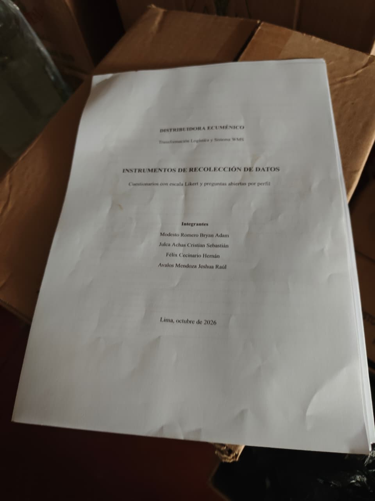
Figura 9. Juego de cuestionarios impreso, con los integrantes del equipo, listo para su aplicación en campo.
Registro fotográfico de la visita
Durante la aplicación de los cuestionarios, el equipo recorrió el almacén y la unidad de reparto para registrar las condiciones que describían los trabajadores. Haz clic en cualquier fotografía para ampliarla.
AlmacénColumnas de cajas apiladas en el piso, sin racksUnidad de repartoCarga sin divisiones junto a la carretilla
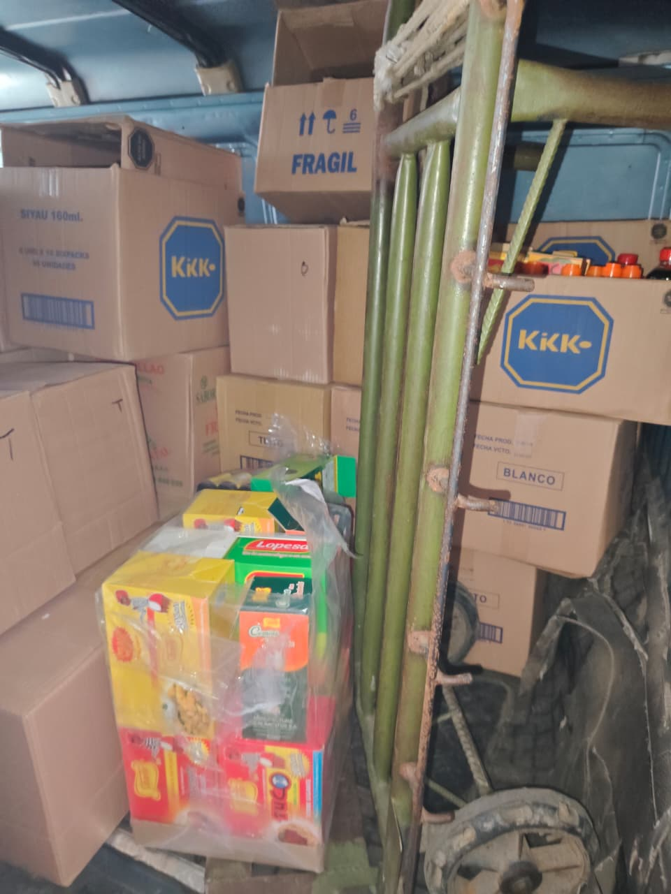
Unidad de repartoCajas marcadas a mano y productos sueltosDespachoLíquidos y secos juntos en cajas abiertas
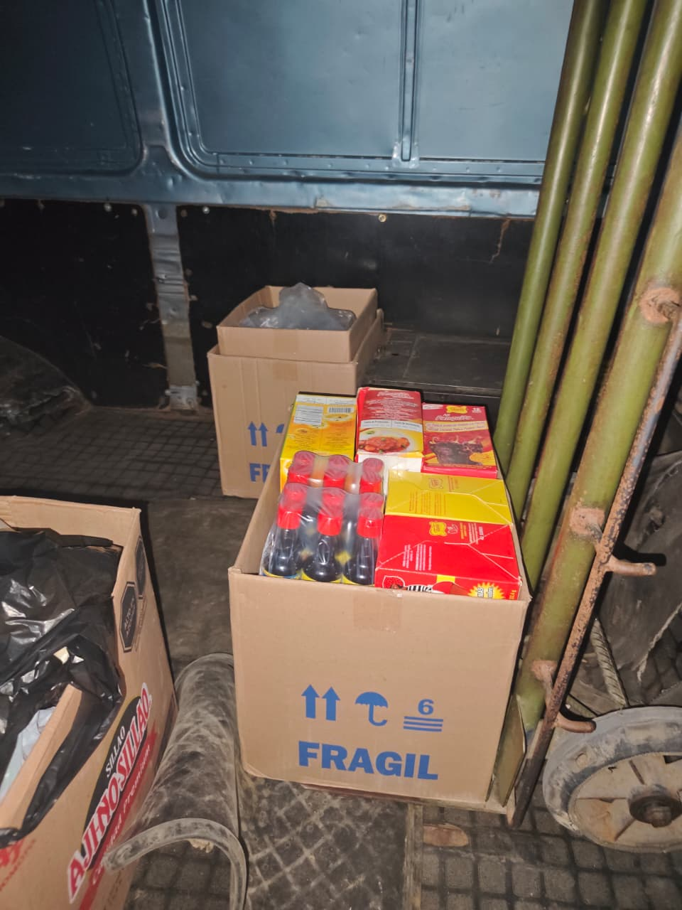
DespachoBultos sin rotular por clienteControl manualSalida de carga contada con palotes
N.°
Perfil
Dirigido a
Nivel
Preguntas Likert
Preguntas abiertas
1
Gerencia y Jefaturas
Gerente General, Jefe de Operaciones y Jefe de Ventas
Estratégico
19
5
2
Supervisión de Almacén e Inventarios
Supervisor de almacén y encargados de inventario
Táctico
18
5
3
Operarios de Almacén
Operarios de picking, packing, recepción y carga
Operativo
17
5
4
Personal de Reparto
Choferes y ayudantes de reparto
Operativo
16
5
GJ
Cuestionario 1 de 4
Gerencia y Jefaturas
Nivel estratégico · Gerencia · 19 preguntas Likert y 5 preguntas abiertas
Aplicado
ObjetivoDimensionar el impacto económico de las demoras y los errores, la calidad de la información disponible para decidir y la disposición a invertir por etapas.
Preguntas Likert · promedio por tema
Tema (dimensión)
Preguntas Likert N.°
Números marcados ÷ cantidad
Promedio (1 a 5)
Nivel
A. Costos y rentabilidad
1 a 4
(4 + 4 + 3 + 4) ÷ 4
3,75
Alto
B. Control de inventario e información
5 a 8
(3 + 4 + 4 + 4) ÷ 4
3,75
Alto
C. Servicio al cliente
9 a 11
(4 + 3 + 4) ÷ 3
3,67
Alto
D. Organización y procesos
12 a 14
(5 + 4 + 4) ÷ 3
4,33
Alto
E. Disposición a la mejora
15 a 19
(4 + 5 + 5 + 3 + 4) ÷ 5
4,20
Alta
Cómo leerlo: cada fila suma los números que marcó la persona en las preguntas Likert de ese tema y los divide entre la cantidad de preguntas. Para este perfil, costos y rentabilidad, control de inventario e información, servicio al cliente y organización y procesos salen en nivel alto: el problema sí ocurre con frecuencia. La disposición al cambio es alta (4,20): aceptan las mejoras propuestas.
Ver las 19 preguntas Likert (afirmaciones) y el número que marcó este perfil
N.°
Pregunta Likert (afirmación)
Número marcado
1
Las demoras al preparar los pedidos le restan rentabilidad a la empresa.
De acuerdo (4)
2
El personal de almacén trabaja horas extra con frecuencia para completar los despachos.
De acuerdo (4)
3
La empresa pierde mercadería por vencimiento, derrames o aplastamiento.
Ni de acuerdo ni en desacuerdo (3)
4
Los pedidos incompletos obligan a hacer segundas entregas que elevan los costos de reparto.
De acuerdo (4)
5
Con frecuencia se vende un producto que luego no se encuentra en el almacén.
Ni de acuerdo ni en desacuerdo (3)
6
El inventario registrado no coincide con las existencias físicas del almacén.
De acuerdo (4)
7
No cuento con información confiable sobre los tiempos reales de preparación de pedidos.
De acuerdo (4)
8
Me entero de los retrasos principalmente por los reclamos de los clientes.
De acuerdo (4)
9
Los clientes reciben sus pedidos fuera del horario acordado con frecuencia.
De acuerdo (4)
10
La empresa ha perdido ventas o clientes por pedidos incompletos o tardíos.
Ni de acuerdo ni en desacuerdo (3)
11
La salida tardía de la unidad de reparto afecta el cumplimiento de la ruta del día.
De acuerdo (4)
12
Las tareas del almacén dependen de la experiencia de los trabajadores más antiguos.
Totalmente de acuerdo (5)
13
La empresa no cuenta con procedimientos escritos para recibir, guardar y despachar mercadería.
De acuerdo (4)
14
Debo intervenir personalmente para resolver los problemas diarios del almacén.
De acuerdo (4)
15
Estoy dispuesto a invertir por etapas en racks y en un sistema de gestión de almacén.
De acuerdo (4)
16
Prefiero una implementación gradual que no detenga las ventas diarias.
Totalmente de acuerdo (5)
17
Un reporte periódico de tiempos y errores me ayudaría a tomar mejores decisiones.
Totalmente de acuerdo (5)
18
Considero alcanzable reducir en 40 % el tiempo de preparación de pedidos en seis meses.
Ni de acuerdo ni en desacuerdo (3)
19
Estoy dispuesto a destinar horas del personal a su capacitación en los nuevos procedimientos.
De acuerdo (4)
Preguntas abiertas
P1
¿Cuánto estima que pierde la empresa al mes por demoras, horas extra y mercadería vencida o dañada? (monto aproximado en soles)
Respuesta
Aproximadamente S/ 3,500 al mes entre horas extra, fletes de segundas entregas y mermas.
P2
¿Qué monto o rango de inversión considera viable para la primera etapa del proyecto?
Respuesta
Entre S/ 5,000 y S/ 8,000 para la primera etapa de ordenamiento y racks.
P3
¿Qué tendría que ocurrir en seis meses para considerar que el proyecto valió la pena?
Respuesta
Tener menos reclamos por entregas tarde y un control real de inventarios sin descuadres grandes.
P4
¿Qué indicadores le gustaría revisar cada semana (tiempos de preparación, errores, mermas, puntualidad de salida u otros)?
Respuesta
Tiempo de preparación de pedidos, porcentaje de errores y puntualidad de salida de camiones.
P5
¿Qué riesgos o temores tiene respecto a implementar un sistema y nuevos procedimientos en el almacén?
Respuesta
Que el personal operativo rechace el uso de nuevos sistemas o equipos por resistencia al cambio.
SA
Cuestionario 2 de 4
Supervisión de Almacén e Inventarios
Nivel táctico · Almacén · 18 preguntas Likert y 5 preguntas abiertas
Aplicado
ObjetivoConocer las reglas actuales de ubicación, registro y rotación de la mercadería y la forma en que se capacita al personal.
Preguntas Likert · promedio por tema
Tema (dimensión)
Preguntas Likert N.°
Números marcados ÷ cantidad
Promedio (1 a 5)
Nivel
A. Ubicación y orden del almacén
1 a 4
(4 + 4 + 4 + 3) ÷ 4
3,75
Alto
B. Registro e inventario
5 a 8
(4 + 4 + 4 + 4) ÷ 4
4,00
Alto
C. Rotación y vencimientos
9 a 11
(4 + 3 + 3) ÷ 3
3,33
Medio
D. Procedimientos y capacitación
12 a 14
(4 + 4 + 5) ÷ 3
4,33
Alto
E. Disposición al cambio
15 a 18
(5 + 5 + 4 + 3) ÷ 4
4,25
Alta
Cómo leerlo: cada fila suma los números que marcó la persona en las preguntas Likert de ese tema y los divide entre la cantidad de preguntas. Para este perfil, ubicación y orden del almacén, registro e inventario y procedimientos y capacitación salen en nivel alto: el problema sí ocurre con frecuencia. Rotación y vencimientos queda en nivel medio: ocurre, pero no siempre. La disposición al cambio es alta (4,25): aceptan las mejoras propuestas.
Ver las 18 preguntas Likert (afirmaciones) y el número que marcó este perfil
N.°
Pregunta Likert (afirmación)
Número marcado
1
La mercadería nueva se coloca donde haya espacio libre, sin una zona asignada.
De acuerdo (4)
2
Es difícil ubicar un producto cuando no está la persona que lo guardó.
De acuerdo (4)
3
Los pasillos suelen estar ocupados por cajas o mercadería.
De acuerdo (4)
4
Los productos líquidos y los secos se guardan juntos o muy cerca.
Ni de acuerdo ni en desacuerdo (3)
5
Las entradas y salidas de mercadería se anotan a mano en cuadernos o talonarios.
De acuerdo (4)
6
El conteo de inventario rara vez cuadra con lo registrado.
De acuerdo (4)
7
Los productos pequeños (sobres, tiras) son los que más se pierden en el conteo.
De acuerdo (4)
8
Los faltantes se descubren recién al momento de armar el pedido.
De acuerdo (4)
9
En la práctica se despacha la mercadería más accesible y no necesariamente la más antigua.
De acuerdo (4)
10
Al recibir mercadería no se anotan los lotes ni las fechas de vencimiento.
Ni de acuerdo ni en desacuerdo (3)
11
Se han vencido productos que quedaron olvidados en el almacén.
Ni de acuerdo ni en desacuerdo (3)
12
No existe un manual que explique cómo recibir, guardar y despachar mercadería.
De acuerdo (4)
13
Un trabajador nuevo necesita varias semanas para trabajar al ritmo de los demás.
De acuerdo (4)
14
Me interrumpen con frecuencia para preguntarme dónde está un producto.
Totalmente de acuerdo (5)
15
Codificar los racks por pasillo, columna y nivel facilitaría el trabajo del almacén.
Totalmente de acuerdo (5)
16
Un sistema que registre las entradas y salidas al momento mejoraría el control del inventario.
Totalmente de acuerdo (5)
17
Estoy dispuesto a liderar la capacitación del personal en los nuevos procedimientos.
De acuerdo (4)
18
Considero que el personal a mi cargo aceptaría usar lectores de código de barras.
Ni de acuerdo ni en desacuerdo (3)
Preguntas abiertas
P1
¿Cuántas veces por semana se vende un producto que luego no se encuentra en el almacén?
Respuesta
De 4 a 6 veces por semana ocurre que no encontramos stock registrado.
P2
¿Cada cuánto se hace un conteo completo del inventario y cuánto tiempo toma?
Respuesta
Un conteo completo se hace cada fin de mes y toma cerca de un día entero.
P3
¿Qué productos o marcas presentan más descuadres, vencimientos o daños?
Respuesta
Los productos pequeños y abarrotes sueltos o en tiras son los que más se descuadran.
P4
Si el almacén se ordenara por zonas, ¿qué productos ubicaría más cerca de la zona de despacho y por qué?
Respuesta
Los de mayor rotación y salida rápida cerca de la puerta para agilizar el despacho.
P5
¿Qué dificultades prevé al capacitar al personal en un sistema nuevo?
Respuesta
El temor a la tecnología o que se equivoquen al registrar las entradas y salidas con lectores.
OA
Cuestionario 3 de 4
Operarios de Almacén
Nivel operativo · Almacén · 17 preguntas Likert y 5 preguntas abiertas
Aplicado
ObjetivoEntender el tiempo y el esfuerzo físico que demanda preparar los pedidos, los errores más comunes y la disposición a usar lectores de código de barras.
Preguntas Likert · promedio por tema
Tema (dimensión)
Preguntas Likert N.°
Números marcados ÷ cantidad
Promedio (1 a 5)
Nivel
A. Búsqueda y preparación de pedidos
1 a 4
(4 + 4 + 4 + 3) ÷ 4
3,75
Alto
B. Esfuerzo físico y seguridad
5 a 9
(4 + 4 + 3 + 4 + 3) ÷ 5
3,60
Medio
C. Orden y registro
10 a 13
(4 + 4 + 4 + 5) ÷ 4
4,25
Alto
D. Disposición al cambio
14 a 17
(5 + 4 + 5 + 4) ÷ 4
4,50
Alta
Cómo leerlo: cada fila suma los números que marcó la persona en las preguntas Likert de ese tema y los divide entre la cantidad de preguntas. Para este perfil, búsqueda y preparación de pedidos y orden y registro salen en nivel alto: el problema sí ocurre con frecuencia. Esfuerzo físico y seguridad queda en nivel medio: ocurre, pero no siempre. La disposición al cambio es alta (4,50): aceptan las mejoras propuestas.
Ver las 17 preguntas Likert (afirmaciones) y el número que marcó este perfil
N.°
Pregunta Likert (afirmación)
Número marcado
1
Pierdo tiempo buscando productos en el almacén cuando armo un pedido.
De acuerdo (4)
2
Cuando falta un producto de la lista, doy varias vueltas antes de confirmar que no hay.
De acuerdo (4)
3
Es fácil confundir productos parecidos (por ejemplo, comino entero y comino molido).
De acuerdo (4)
4
Un pedido grande me toma más de 30 minutos en armarse.
Ni de acuerdo ni en desacuerdo (3)
5
Termino el turno con dolor de espalda o de cintura.
De acuerdo (4)
6
Tengo que agacharme constantemente para sacar cajas del piso.
De acuerdo (4)
7
He visto derrames de botellas que malograron otros productos.
Ni de acuerdo ni en desacuerdo (3)
8
Los pasillos ocupados dificultan el paso con la carretilla (diablo).
De acuerdo (4)
9
No cuento con equipo de protección (faja, guantes, calzado) para cargar.
Ni de acuerdo ni en desacuerdo (3)
10
Cada trabajador guarda la mercadería donde encuentra espacio.
De acuerdo (4)
11
Anotar a mano los pedidos genera errores cuando hay apuro.
De acuerdo (4)
12
Saco primero la mercadería que está más a la mano, aunque haya otra más antigua.
De acuerdo (4)
13
Aprendí el trabajo mirando a mis compañeros, sin una guía escrita.
Totalmente de acuerdo (5)
14
Una "pistola" lectora de códigos me ayudaría a evitar errores.
Totalmente de acuerdo (5)
15
Me sentiría cómodo usando un equipo portátil si recibo una buena capacitación.
De acuerdo (4)
16
Tener los racks con etiquetas de ubicación me ahorraría tiempo de búsqueda.
Totalmente de acuerdo (5)
17
Me gustaría dar ideas para organizar mejor el almacén.
De acuerdo (4)
Preguntas abiertas
P1
¿Cuánto tiempo le toma, más o menos, armar un pedido pequeño y uno grande?
Respuesta
Un pedido pequeño toma entre 10 y 15 minutos y uno grande más de 30 o 40 minutos. Armar todos los pedidos de una zona (Surco, Chorrillos, Villa María del Triunfo, Villa El Salvador, entre otras) toma alrededor de 1 hora cuando hay pocos pedidos y de 2 a 3 horas cuando hay bastantes.
P2
¿Qué productos le cuesta más encontrar o se confunden con más facilidad?
Respuesta
Las presentaciones muy parecidas de condimentos o abarrotes en bolsa pequeña.
P3
¿Qué parte de su trabajo le genera más cansancio o riesgo de accidente?
Respuesta
Levantar cajas pesadas desde el piso y agacharse constantemente.
P4
¿Qué le preocupa de usar un lector de códigos o un equipo portátil?
Respuesta
Que el equipo se malogre o no saber usarlo rápido y retrasar el trabajo.
P5
¿Qué cambio en el almacén le haría el trabajo más fácil?
Respuesta
Tener los pasillos despejados y etiquetas claras en los racks.
PR
Cuestionario 4 de 4
Personal de Reparto
Nivel operativo · Distribución · 16 preguntas Likert y 5 preguntas abiertas
Aplicado
ObjetivoIdentificar las causas de las salidas tardías, la forma en que hoy se planifican las rutas y la calidad de las entregas.
Preguntas Likert · promedio por tema
Tema (dimensión)
Preguntas Likert N.°
Números marcados ÷ cantidad
Promedio (1 a 5)
Nivel
A. Salida y horario
1 a 4
(4 + 4 + 4 + 4) ÷ 4
4,00
Alto
B. Planificación de rutas
5 a 8
(4 + 3 + 4 + 4) ÷ 4
3,75
Alto
C. Calidad de la entrega
9 a 12
(3 + 3 + 3 + 4) ÷ 4
3,25
Medio
D. Disposición al cambio
13 a 16
(5 + 5 + 4 + 5) ÷ 4
4,75
Alta
Cómo leerlo: cada fila suma los números que marcó la persona en las preguntas Likert de ese tema y los divide entre la cantidad de preguntas. Para este perfil, salida y horario y planificación de rutas salen en nivel alto: el problema sí ocurre con frecuencia. Calidad de la entrega queda en nivel medio: ocurre, pero no siempre. La disposición al cambio es alta (4,75): aceptan las mejoras propuestas.
Ver las 16 preguntas Likert (afirmaciones) y el número que marcó este perfil
N.°
Pregunta Likert (afirmación)
Número marcado
1
La unidad de reparto sale después de las 6:00 a. m. con frecuencia.
De acuerdo (4)
2
La salida se retrasa porque los pedidos no están listos a tiempo.
De acuerdo (4)
3
Por salir tarde me encuentro con el tráfico de la hora punta.
De acuerdo (4)
4
Debo esperar en el almacén a que terminen de armar los pedidos.
De acuerdo (4)
5
El orden de visita a los clientes depende de mi experiencia y no de un plan.
De acuerdo (4)
6
Me guío por un plano marcado a mano para hacer la ruta.
Ni de acuerdo ni en desacuerdo (3)
7
Cuando hay un cliente nuevo o cambian la ruta, pierdo tiempo ubicándolo.
De acuerdo (4)
8
La carga no se acomoda en la unidad según el orden de entrega.
De acuerdo (4)
9
Los clientes reciben pedidos incompletos o con productos equivocados.
Ni de acuerdo ni en desacuerdo (3)
10
He tenido que regresar otro día o dar una segunda vuelta por un pedido incompleto.
Ni de acuerdo ni en desacuerdo (3)
11
Llegan productos dañados (aplastados o derramados) al cliente.
Ni de acuerdo ni en desacuerdo (3)
12
Los clientes se quejan por la hora de llegada de sus pedidos.
De acuerdo (4)
13
Tener los pedidos armados y ordenados por ruta desde la tarde anterior me permitiría salir a tiempo.
Totalmente de acuerdo (5)
14
Una etiqueta en cada bulto con el nombre del cliente facilitaría la entrega.
Totalmente de acuerdo (5)
15
Usaría una aplicación en el celular para ordenar mi ruta si me enseñan a usarla.
De acuerdo (4)
16
Revisar la carga con una lista antes de salir reduciría los errores de entrega.
Totalmente de acuerdo (5)
Preguntas abiertas
P1
¿A qué hora sale realmente la unidad en un día normal y a qué hora termina la ruta?
Respuesta
Salimos entre las 7:00 y las 8:00 a. m. y terminamos la ruta alrededor de las 6:00 p. m.
P2
¿Cuántos clientes visita por ruta y cuántos días a la semana sale a repartir?
Respuesta
Visitamos alrededor de 100 clientes por ruta, y en algunos días se pasa de 130; en la unidad van dos personas para entregar los pedidos. Salimos a repartir 6 días a la semana.
P3
¿Cuántas veces al mes debe regresar por pedidos incompletos o equivocados?
Respuesta
Unas 3 o 4 veces al mes debido a bultos equivocados o faltantes.
P4
¿Qué zonas o clientes le generan más demoras y por qué?
Respuesta
Las zonas céntricas por el tráfico pesado de la mañana y demoras en encontrar direcciones nuevas.
P5
¿Qué cambio le ayudaría más a salir a tiempo y completar la ruta?
Respuesta
Tener los pedidos listos desde la tarde anterior y la mercadería ordenada por ruta en el camión.
7.6 Hallazgos del Trabajo de Campo
Cada hallazgo combina lo marcado en la escala con lo respondido en las preguntas abiertas. Estos hallazgos son la base con la que se construye el árbol de problemas del capítulo 8: la última columna indica qué causa o efecto de ese árbol sustenta cada uno.
Hallazgo
Evidencia en la escala (promedio de 1 a 5)
Sustenta en el árbol (capítulo 8)
La mercadería se guarda donde hay espacio, sin zonas definidas.
Supervisión · ubicación y orden del almacén: 3,75 Operarios · orden y registro: 4,25
Mercadería apilada en el piso y los pasillos (causa indirecta 1.1)
Hay derrames que malogran otros productos y el personal se agacha constantemente para sacar cajas del piso.
Operarios · esfuerzo físico y seguridad: 3,60
Líquidos y secos juntos (causa indirecta 1.2) y mermas y sobreesfuerzo (efecto directo 3)
En la práctica sale primero lo que está a la mano y no lo más antiguo.
Sin registro de lotes ni PEPS (causa indirecta 1.3)
El registro es manual: el stock registrado no aparece de 4 a 6 veces por semana y el conteo completo toma un día al mes.
Gerencia · control de inventario e información: 3,75 Supervisión · registro e inventario: 4,00
Pedidos sin validar el stock y conteo manual (causas indirectas 2.1 y 2.2)
No hay manual; el trabajo se aprende mirando a los compañeros.
Gerencia · organización y procesos: 4,33 Supervisión · procedimientos y capacitación: 4,33 Operarios · pregunta Likert 13: 5
Sin manuales ni capacitación (causa indirecta 3.1)
La ruta se ordena por experiencia y con un plano marcado a mano; las direcciones nuevas generan demoras.
Reparto · planificación de rutas: 3,75
Rutas trazadas a mano (causa indirecta 4.2)
Armar los pedidos de una zona toma de 1 a 3 horas y la unidad sale entre las 7:00 y las 8:00 a. m., cuando debería salir a las 6:00.
Operarios · búsqueda y preparación de pedidos: 3,75 Reparto · salida y horario: 4,00
Salida tardía del reparto (efecto directo 2)
Las horas extra, las segundas entregas (3 o 4 al mes) y las mermas generan sobrecostos.
Gerencia · costos y rentabilidad: 3,75 Reparto · calidad de la entrega: 3,25
Sobrecostos operativos (efecto indirecto 1)
7.7 Conclusiones del Trabajo de Campo
El diagnóstico se confirma: 11 de las 14 dimensiones de diagnóstico alcanzan un nivel alto en los cuatro perfiles.
El control manual es la causa con más respaldo: registro e inventario obtiene 4,00 y la supervisión reporta faltantes de stock varias veces por semana.
La salida tardía nace en el almacén: armar los pedidos de una zona toma de 1 a 3 horas y la unidad sale entre las 7:00 y las 8:00 a. m. para atender alrededor de 100 clientes, con una ruta que termina cerca de las 6:00 p. m.
El costo es relevante: la gerencia estima pérdidas de aproximadamente S/ 3,500 al mes y considera viable invertir entre S/ 5,000 y S/ 8,000 en una primera etapa, sin detener las ventas.
Niveles medios: rotación y vencimientos (3,33), esfuerzo físico y seguridad (3,60) y calidad de la entrega (3,25) se presentan con menor intensidad que el desorden y el control manual.
Disposición favorable: todos los perfiles muestran una disposición alta al cambio (de 4,20 a 4,75); los temores se concentran en que los equipos fallen o en no saber usarlos, lo que pide una capacitación práctica.
MRJAFCAM
Escrito por
Modesto Romero Bryan Adam, Julca Achas Cristian Sebastian, Felix Cecinario Hernan y Avalos Mendoza Jeshua Raul
Árbol de Problemas: Causas, Problema Central y Efectos
Las causas, el problema central y sus efectos en un solo diagrama: de dónde nacen los retrasos y hasta dónde llegan.
MRJAFCAMPor el equipo del proyecto— min de lectura
08
8.1 Estructura del Árbol de Problemas
El árbol de problemas ordena el diagnóstico de los capítulos 1, 2 y 7. En la base se ubican cuatro causas directas (en rojo), cada una con las causas indirectas que la originan; al centro, el problema central (en naranja); y en la parte superior, tres efectos directos (en verde) que se combinan en dos efectos indirectos y desembocan en un efecto final. Las flechas indican la dirección de causa a efecto.
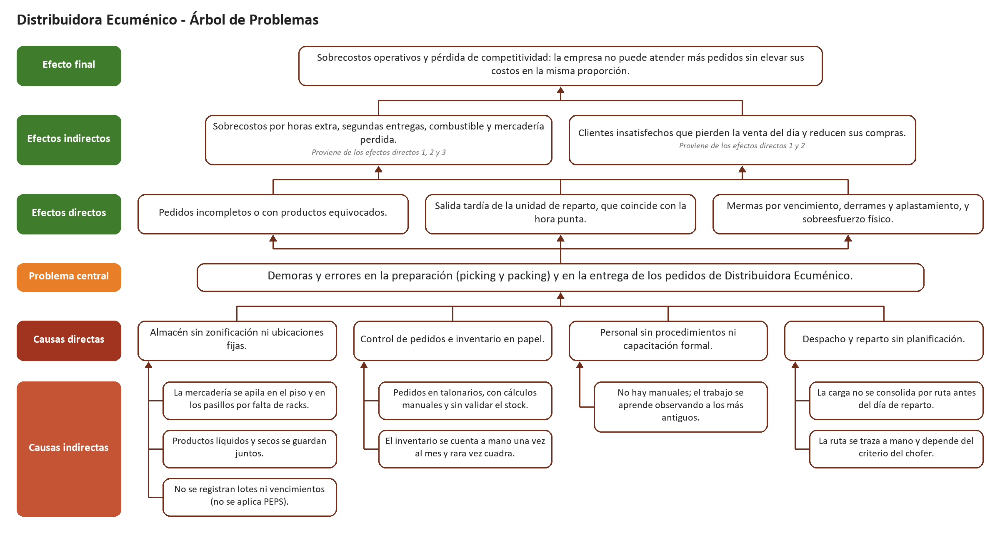
Árbol de problemas de Distribuidora Ecuménico. Elaboración propia a partir del diagnóstico y de los cuestionarios de campo.Descargar PNG
8.2 Detalle por Nivel
Nivel
Contenido
Efecto final
Sobrecostos operativos y pérdida de competitividad: la empresa no puede atender más pedidos sin elevar sus costos en la misma proporción.
Efecto indirecto 1
Sobrecostos por horas extra, segundas entregas, combustible y mercadería perdida (proviene de los efectos directos 1, 2 y 3).
Efecto indirecto 2
Clientes insatisfechos que pierden la venta del día y reducen sus compras (proviene de los efectos directos 1 y 2).
Efecto directo 1
Pedidos incompletos o con productos equivocados.
Efecto directo 2
Salida tardía de la unidad de reparto, que coincide con la hora punta.
Efecto directo 3
Mermas por vencimiento, derrames y aplastamiento, y sobreesfuerzo físico del personal.
Problema central
Demoras y errores en la preparación (picking y packing) y en la entrega de los pedidos de Distribuidora Ecuménico.
Causa directa 1
Almacén sin zonificación ni ubicaciones fijas.
↳ Causa indirecta 1.1
La mercadería se apila en el piso y en los pasillos por falta de racks.
↳ Causa indirecta 1.2
Productos líquidos y secos se guardan juntos.
↳ Causa indirecta 1.3
No se registran lotes ni vencimientos, por lo que no se aplica PEPS.
Causa directa 2
Control de pedidos e inventario en papel.
↳ Causa indirecta 2.1
Los pedidos se anotan en talonarios, con cálculos manuales y sin validar el stock.
↳ Causa indirecta 2.2
El inventario se cuenta a mano una vez al mes y rara vez cuadra.
Causa directa 3
Personal sin procedimientos ni capacitación formal.
↳ Causa indirecta 3.1
No hay manuales; el trabajo se aprende observando a los trabajadores más antiguos.
Causa directa 4
Despacho y reparto sin planificación.
↳ Causa indirecta 4.1
La carga no se consolida por ruta antes del día de reparto.
↳ Causa indirecta 4.2
La ruta se traza a mano y depende del criterio del chofer.
MRJAFCAM
Escrito por
Modesto Romero Bryan Adam, Julca Achas Cristian Sebastian, Felix Cecinario Hernan y Avalos Mendoza Jeshua Raul
Árbol de Objetivos y Evaluación de Proyectos Alternativos
Del problema a la solución: árbol de objetivos, acciones por medio fundamental y la evaluación que define el proyecto a ejecutar.
MRJAFCAMPor el equipo del proyecto— min de lectura
09
9.1 Árbol de Objetivos
El árbol de objetivos convierte cada elemento del árbol de problemas (capítulo 8) en su situación deseada. Las cuatro causas directas se transforman en medios de primer nivel y sus causas indirectas en medios fundamentales; el problema central se convierte en el objetivo central; y los efectos, en los fines que la empresa alcanzará al resolverlo. Las flechas indican la dirección de medio a fin.
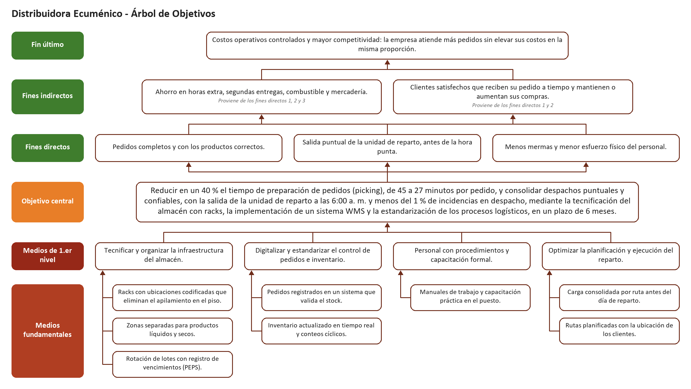
Árbol de objetivos de Distribuidora Ecuménico. Cada medio y fin corresponde a una causa o efecto del árbol de problemas (capítulo 8).Descargar PNG
9.2 Objetivos en Formato SMART
El objetivo central se redactó con el formato SMART: específico, medible, alcanzable, relevante y con un plazo definido. Su redacción completa es la siguiente:
Objetivo central
Reducir en un 40 % el tiempo de preparación de pedidos (picking), de 45 a 27 minutos por pedido, y consolidar despachos puntuales y confiables, con la salida de la unidad de reparto a las 6:00 a. m. y menos del 1 % de incidencias en despacho, mediante la tecnificación del almacén con racks, la implementación de un sistema WMS y la estandarización de los procesos logísticos, en un plazo de 6 meses.
Criterio SMART
Cómo lo cumple el objetivo central
S · Específico
Precisa qué se mejora (la preparación de pedidos y el despacho), dónde (el almacén y el reparto de Distribuidora Ecuménico) y con qué medios (racks, sistema WMS y procesos estandarizados).
M · Medible
Fija metas con número: tiempo de preparación de 45 a 27 minutos por pedido (-40 %), salida de la unidad a las 6:00 a. m. y menos del 1 % de incidencias en despacho.
A · Alcanzable
Se ejecuta por etapas con una inversión inicial de S/ 5,000 a S/ 8,000 que la gerencia considera viable, sobre un prototipo de WMS ya desarrollado y con una disposición al cambio alta en los cuatro perfiles (de 4,20 a 4,75).
R · Relevante
Ataca directamente el problema central del árbol de problemas (capítulo 8): las demoras y los errores en la preparación y en la entrega de los pedidos.
T · Temporal
Tiene un plazo total de 6 meses, con hitos al tercer mes (racks y codificación), al cuarto mes (WMS), al quinto mes (capacitación) y al sexto mes (salida puntual estabilizada).
Cada medio de primer nivel del árbol de objetivos se convierte en un objetivo específico, también en formato SMART:
N.°
Objetivo específico
Indicador y meta
Plazo
Medio
OE1
Instalar racks metálicos y codificar el 100 % de las ubicaciones del almacén por pasillo, columna y nivel, con las zonas A, B y C delimitadas y el registro de lotes y vencimientos (PEPS) en funcionamiento, al término del tercer mes.
Ubicaciones codificadas: 100 %
Mes 3
Medio 1
OE2
Implementar el sistema WMS para registrar el 100 % de los pedidos, ingresos y salidas, y elevar la exactitud del inventario de 78 % a 99 %, al término del cuarto mes.
Exactitud del inventario: 78 % a 99 %
Mes 4
Medio 2
OE3
Elaborar los manuales de procedimientos y capacitar al 100 % del personal de almacén y reparto en el uso del WMS y en los nuevos flujos de trabajo antes de la salida en vivo, al término del quinto mes.
Personal capacitado: 100 %
Mes 5
Medio 3
OE4
Consolidar la carga por cuadrantes la tarde anterior y estandarizar las hojas de ruta de despacho, para que la unidad de reparto salga a las 6:00 a. m. en al menos 9 de cada 10 días de reparto al término del sexto mes.
Salidas a las 6:00 a. m.: 90 % de los días
Mes 6
Medio 4
9.3 Acciones por Medio Fundamental
Para cada medio fundamental se definieron las acciones que lo hacen posible. Las acciones complementarias se ejecutan en cualquier caso; las acciones excluyentes (marcadas con las letras a y b) son dos formas distintas de lograr el mismo medio, por lo que solo una de ellas puede formar parte de cada proyecto.
Medio fundamental
Código
Acción
Tipo
1.1 Racks con ubicaciones codificadas
A1.1a
Adquirir racks metálicos nuevos y codificar cada ubicación por pasillo, columna y nivel.
Excluyente
A1.1b
Reacondicionar y reforzar los anaqueles existentes y codificar sus ubicaciones.
Excluyente
1.2 Zonas para líquidos y secos
A1.2
Zonificar el almacén en zonas A, B y C y colocar bandejas antiderrames en la zona de líquidos.
Complementaria
1.3 Rotación de lotes (PEPS)
A1.3
Señalizar los pasillos y registrar el lote y la fecha de vencimiento en cada ingreso.
Complementaria
2.1 Pedidos que validan el stock
A2.1
Instalar y configurar el sistema WMS para registrar y validar los pedidos digitalmente.
Complementaria
2.2 Inventario en tiempo real
A2.2
Registrar en el WMS cada ingreso y salida para mantener el stock actualizado en tiempo real y realizar conteos cíclicos por pasillo.
Complementaria
3.1 Manuales y capacitación
A3.1
Elaborar manuales de procedimientos y capacitar al personal en el uso del WMS y en los nuevos flujos de trabajo.
Complementaria
4.1 Carga consolidada por ruta
A4.1
Establecer un protocolo para consolidar la carga por ruta la tarde anterior y controlar la salida de las 6:00 a. m.
Complementaria
4.2 Rutas y despacho ordenado
A4.2a
Estandarizar hojas de ruta de despacho organizadas por cuadrantes de clientes y carga previa en unidad.
Excluyente
A4.2b
Contratar un software especializado de ruteo con suscripción mensual permanente.
Excluyente
9.4 Proyectos Alternativos
Al combinar las acciones complementarias con una de cada par de acciones excluyentes se obtienen dos proyectos alternativos. Los dos ejecutan el objetivo central completo: tecnifican el almacén, implementan el sistema WMS y estandarizan los procesos logísticos. Se diferencian en cómo se tecnifica el almacenamiento (racks nuevos o anaqueles reacondicionados) y en cómo se gestionan las rutas (estandarización operativa interna o contratación de software externo de ruteo por suscripción).
Proyecto Alternativo N.° 1
Tecnificación del almacén con racks metálicos nuevos, sistema WMS y estandarización de los procesos logísticos con hojas de ruta y consolidación previa
Tecnificar el almacén adquiriendo racks metálicos nuevos y codificando cada ubicación (A1.1a), zonificándolo en zonas A, B y C con bandejas antiderrames (A1.2) y aplicando PEPS con registro de lote y vencimiento (A1.3); implementar el sistema WMS para registrar y validar los pedidos (A2.1) y mantener el stock actualizado en cada ingreso y salida (A2.2); y estandarizar los procesos logísticos con manuales y capacitación del personal (A3.1), un protocolo de consolidación de carga y salida a las 6:00 a. m. (A4.1) y hojas de ruta estandarizadas por cuadrantes que ordenan las visitas a los clientes sin incurrir en costos de suscripciones externas (A4.2a).
Proyecto Alternativo N.° 2
Tecnificación del almacén con anaqueles reacondicionados, sistema WMS y estandarización de los procesos logísticos con software de ruteo por suscripción
Tecnificar el almacén reacondicionando y reforzando los anaqueles existentes y codificando sus ubicaciones (A1.1b), zonificándolo en zonas A, B y C con bandejas antiderrames (A1.2) y aplicando PEPS con registro de lote y vencimiento (A1.3); implementar el sistema WMS para registrar y validar los pedidos (A2.1) y mantener el stock actualizado en cada ingreso y salida (A2.2); y estandarizar los procesos logísticos con manuales y capacitación del personal (A3.1), un protocolo de consolidación de carga y salida a las 6:00 a. m. (A4.1) y un software especializado de ruteo con suscripción mensual (A4.2b).
Código
Acción
Proyecto Alternativo N.° 1
Proyecto Alternativo N.° 2
A1.1a
Adquirir racks metálicos nuevos y codificar cada ubicación por pasillo, columna y nivel.
Incluida
No
A1.1b
Reacondicionar y reforzar los anaqueles existentes y codificar sus ubicaciones.
No
Incluida
A1.2
Zonificar el almacén en zonas A, B y C y colocar bandejas antiderrames en la zona de líquidos.
Incluida
Incluida
A1.3
Señalizar los pasillos y registrar el lote y la fecha de vencimiento en cada ingreso (PEPS).
Incluida
Incluida
A2.1
Instalar y configurar el sistema WMS para registrar y validar los pedidos digitalmente.
Incluida
Incluida
A2.2
Registrar en el WMS cada ingreso y salida para mantener el stock actualizado en tiempo real y realizar conteos cíclicos.
Incluida
Incluida
A3.1
Elaborar manuales de procedimientos y capacitar al personal en el uso del WMS y en los nuevos flujos de trabajo.
Incluida
Incluida
A4.1
Establecer un protocolo para consolidar la carga por ruta la tarde anterior y controlar la salida de las 6:00 a. m.
Incluida
Incluida
A4.2a
Estandarizar hojas de ruta organizadas por cuadrantes geográficos de clientes.
Incluida
No
A4.2b
Contratar un software especializado de ruteo con suscripción mensual.
No
Incluida
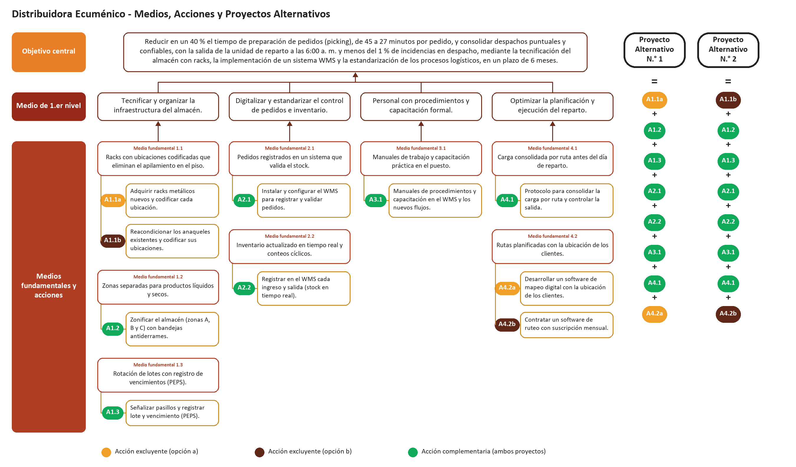
Medios, acciones y proyectos alternativos. Las acciones en naranja y marrón son excluyentes; las verdes forman parte de ambos proyectos.Descargar PNG
9.5 Evaluación de los Proyectos Alternativos
Para elegir entre ambos proyectos se aplicó el método de juicio de expertos: el equipo del proyecto calificó cada alternativa con una escala de puntaje para cinco criterios, sustentando cada calificación en las evidencias de campo y en los resultados de los cuestionarios (capítulo 7). La matriz resume los criterios, sus escalas, sus puntajes y el resultado de cada alternativa:
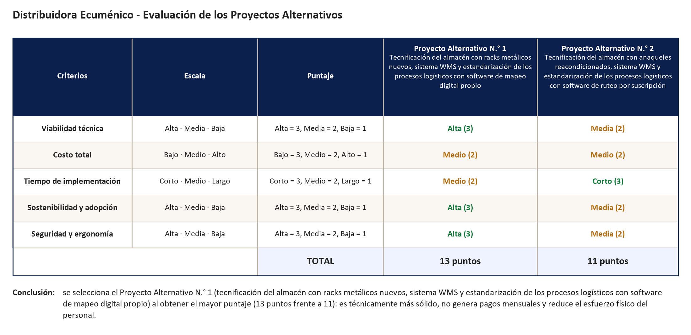
Matriz de evaluación de los proyectos alternativos. Método de juicio de expertos con escala de puntaje por criterio.Descargar PNG
El sustento de cada calificación se detalla a continuación:
Criterio
Proyecto Alternativo N.° 1 Tecnificación del almacén con racks metálicos nuevos, sistema WMS y estandarización de los procesos logísticos con hojas de ruta y consolidación previa
Proyecto Alternativo N.° 2 Tecnificación del almacén con anaqueles reacondicionados, sistema WMS y estandarización de los procesos logísticos con software de ruteo por suscripción
Viabilidad técnica
Alta (3) Los racks metálicos soportan la carga y permiten codificar en altura; las hojas de ruta por cuadrantes ordenan las visitas sin riesgo de fallas informáticas externas.
Media (2) Los anaqueles rústicos limitan los niveles disponibles y la codificación de ubicaciones.
Costo total
Medio (2) Mayor inversión inicial en estanterías, sin pagos mensuales permanentes.
Medio (2) Menor inversión inicial, pero con una suscripción mensual fija de por vida.
Tiempo de implementación
Rápido (3) La adquisición de racks y el despliegue del WMS asistido por IA se ejecutan en 8 semanas hábiles.
Medio (2) El reacondicionamiento físico es rápido, pero la integración y parametrización con un software externo de ruteo requiere homologación compleja.
Sostenibilidad y adopción
Alta (3) Control propio de la empresa y procesos estables, respetando el límite presupuestal validado por gerencia.
Media (2) Depende de un proveedor externo y exige más aprendizaje, frente al temor del personal a no saber usar los equipos.
Seguridad y ergonomía
Alta (3) Los niveles a altura de trabajo reducen la necesidad de agacharse a levantar cajas del piso.
Media (2) Los anaqueles bajos mantienen parte del esfuerzo físico actual.
Total
14 puntos
10 puntos
Conclusión
Se selecciona el Proyecto Alternativo N.° 1, tecnificación del almacén con racks metálicos nuevos, sistema WMS y estandarización logística de carga previa, al obtener el mayor puntaje (14 puntos frente a 10). Es la alternativa técnicamente más sólida, elimina sobrecostos de suscripciones externas y concentra los recursos en resolver la raíz del problema: el orden físico en racks y el control estricto de inventario.
9.6 Coherencia entre el Objetivo Central y el Proyecto Seleccionado
El proyecto seleccionado debe ejecutar el objetivo central tal como está redactado, sin dejar fuera ninguna de sus partes. La siguiente tabla toma cada parte del objetivo central, literalmente, y muestra el medio del árbol de objetivos que la logra y las acciones del Proyecto Alternativo N.° 1 que la ejecutan:
Parte del objetivo central
Medio
Acciones del Proyecto Alternativo N.° 1 que la ejecutan
“Reducir en un 40 % el tiempo de preparación de pedidos (picking), de 45 a 27 minutos por pedido,”
Medios 1 y 2
A1.1a y A1.2: cada producto tiene una ubicación codificada y una zona fija, por lo que se encuentra sin buscar de memoria. A2.1 y A2.2: el WMS entrega la lista de picking ordenada por ubicación y valida cada producto al registrarlo.
“y consolidar despachos puntuales y confiables, con la salida de la unidad de reparto a las 6:00 a. m. y menos del 1 % de incidencias en despacho,”
Medio 4 (y medio 2)
A4.1: la carga se consolida por ruta la tarde anterior y se controla la salida de las 6:00 a. m. A4.2a: las hojas de ruta ordenadas por cuadrantes agilizan las visitas a los más de 100 clientes. A2.1: la validación del pedido en el WMS evita pedidos incompletos o equivocados.
“mediante la tecnificación del almacén con racks,”
Medio 1
A1.1a: racks metálicos nuevos con ubicaciones codificadas. A1.2: zonas A, B y C con bandejas antiderrames. A1.3: señalización de pasillos y registro de lote y vencimiento (PEPS).
“la implementación de un sistema WMS”
Medio 2
A2.1: instalación y configuración del WMS para registrar y validar los pedidos. A2.2: registro de cada ingreso y salida para mantener el stock en tiempo real, con conteos cíclicos por pasillo.
“y la estandarización de los procesos logísticos,”
Medios 3 y 4
A3.1: manuales de procedimientos y capacitación del personal en el WMS y en los nuevos flujos. A1.3: regla PEPS para la rotación. A4.1: protocolo de consolidación de carga y de salida.
“en un plazo de 6 meses”
Todos los medios
Racks y codificación instalados en el almacén, desarrollo y despliegue del WMS Cloud asistido por IA, inventario físico conciliado y capacitación completa antes de la salida en vivo (desglosado en el capítulo 10).
MRJAFCAM
Escrito por
Modesto Romero Bryan Adam, Julca Achas Cristian Sebastian, Felix Cecinario Hernan y Avalos Mendoza Jeshua Raul
Línea Base del Alcance, Cronograma y Plan Operativo
Enunciado del alcance, EDT formal en sustantivos, ficha del diccionario EDT, red de actividades, arquitectura Cloud VPS y costos 2026.
MRJAFCAMPor el equipo del proyecto— min de lectura
10
10.1 Enunciado del Alcance del Proyecto (Estándares ANSI/PMI 99-001 e ISO 21502)
Conforme a las directrices de Gestión del Alcance establecidas en la norma ANSI/PMI 99-001 (Guía del PMBOK®) y el estándar internacional ISO 21502:2020 (Gestión de proyectos, programas y carteras), el enunciado formaliza con rigor los límites operativos, los entregables aceptados y las exclusiones explícitas para prevenir la corrupción del alcance o trabajos no contratados (gold plating):
Componente del Alcance
Definición y Especificación para Distribuidora Ecuménico
Descripción del Alcance del Producto
Sistema de Gestión de Almacenes (WMS Cloud) desplegado como Aplicación Web Progresiva (PWA) responsiva para smartphones y entorno de escritorio, integrado con una infraestructura física de almacenamiento vertical basada en racks metálicos industriales modulares, zonificación ABC por rotación y control de inventario bajo norma PEPS con registro de lote y fecha de vencimiento.
Criterios de Aceptación del Producto
Exactitud del inventario conciliado (físico vs. digital en WMS) igual o superior al 99 %.
Reducción del tiempo de ciclo de preparación de pedidos (picking) de 45 a 27 minutos por orden (-40 %).
Generación automática de la lista de picking ordenada por coordenada espacial en menos de 1,5 segundos.
Tasa de incidencias en despacho inferior al 1 % mediante validación óptica por escaneo.
Salida efectiva de la unidad de reparto a las 6:00 a. m. en al menos el 90 % de las jornadas operativas.
Entregables Principales del Proyecto
Infraestructura física: 3 cuerpos de racks modulares pesados armados, anclados y zonificados (A, B y C) con bandejas antiderrames.
Codificación espacial: rotulado vinílico de pasillos, columnas y gavetas con nomenclatura estandarizada.
Sistema WMS Cloud: código fuente en Git, base de datos PostgreSQL y módulos de ingresos, inventario, picking y auditoría.
Modo Offline-First: almacenamiento temporal en cliente para continuidad operativa ante cortes de red.
Gestión y estandarización: manuales SOP, plan de capacitación y actas de aceptación firmadas.
Exclusiones Explícitas (Prevención de Gold Plating)
No se incluye software de mapeo catastral ni ruteo GPS propio: La optimización de rutas se gestiona mediante la estandarización de hojas de ruta organizadas por cuadrantes geográficos y consolidación de carga la tarde anterior.
No se adquieren terminales móviles dedicadas (handhelds): La lectura óptica se realiza con smartphones Android mediante cámara y/o minilectores Bluetooth económicos.
No se incluye automatización robótica ni fajas motorizadas: El transporte de piso se mantiene con carretillas operativas manuales.
Restricciones y Supuestos
Restricción: Techo presupuestal de inversión inicial fijado entre S/ 5,000 y S/ 8,000 según viabilidad declarada por gerencia. Supuesto: Los operarios disponen de smartphones compatibles con navegadores modernos y se mantiene la disponibilidad de energía y conectividad Wi-Fi básica en el local.
10.2 Estructura de Desglose del Trabajo (EDT / WBS)
En estricto cumplimiento del Estándar de Práctica del PMI para Estructuras de Desglose del Trabajo (PMI Practice Standard for WBS) y las directrices de descomposición orientada a entregables de la norma ISO/IEC/IEEE 12207, la EDT se compone exclusivamente de sustantivos (entregables tangibles, productos físicos y componentes de software verificables), evitando estrictamente el uso de verbos de acción, asegurando el cumplimiento de la Regla del 100 %:
Código EDT
Elemento de la EDT (Sustantivos)
Nivel Jerárquico
Tipo de Componente
1.0
Modernización de Almacén y Sistema WMS Ecuménico
Nivel 1
Proyecto Integral
1.1
Gestión del Proyecto
Nivel 2
Cuenta de Control (Gestión)
1.1.1
Acta de Constitución y Línea Base del Alcance
Nivel 3
Paquete de Trabajo
1.1.2
Cronograma Ágil y Monitoreo de Entregables
Nivel 3
Paquete de Trabajo
1.1.3
Documentación de Cierre y Aceptación Formal
Nivel 3
Paquete de Trabajo
1.2
Infraestructura Física de Almacén
Nivel 2
Cuenta de Control (Almacén)
1.2.1
Racks Industriales Modulares Metálicos
Nivel 3
Paquete de Trabajo
1.2.2
Zonificación ABC y Bandejas Antiderrames
Nivel 3
Paquete de Trabajo
1.2.3
Codificación Espacial de Pasillos, Columnas y Gavetas
Nivel 3
Paquete de Trabajo
1.3
Sistema de Gestión de Almacén (WMS Cloud)
Nivel 2
Cuenta de Control (Software)
1.3.1
Infraestructura Cloud VPS y Conectividad Wi-Fi
Nivel 3
Paquete de Trabajo
1.3.2
Base de Datos de Catálogo de SKUs y Lotes PEPS
Nivel 3
Paquete de Trabajo
1.3.3
Módulo de Ubicaciones y Consultas en Piso
Nivel 3
Paquete de Trabajo
1.3.4
Módulo de Preparación Inteligente de Pedidos (Picking List)
Nivel 3
Paquete de Trabajo (Crítico)
1.3.5
Módulo de Auditoría (Audit Trail) y Sincronización Offline
Nivel 3
Paquete de Trabajo
1.4
Pruebas y Despliegue Operativo
Nivel 2
Cuenta de Control (Transición)
1.4.1
Inventario Físico Inicial Conciliado
Nivel 3
Paquete de Trabajo
1.4.2
Pruebas Funcionales e Integradas de Picking
Nivel 3
Paquete de Trabajo
1.4.3
Puesta en Producción (Go-Live)
Nivel 3
Paquete de Trabajo
1.5
Estandarización y Capacitación
Nivel 2
Cuenta de Control (Organización)
1.5.1
Manuales de Procedimientos Operativos (SOP)
Nivel 3
Paquete de Trabajo
1.5.2
Protocolo de Consolidación Previa y Despacho 06:00 a. m.
Nivel 3
Paquete de Trabajo
1.5.3
Talleres Prácticos de Entrenamiento al Personal
Nivel 3
Paquete de Trabajo
10.3 Diccionario de la EDT (Fichas Técnicas de los 15 Paquetes de Trabajo)
Conforme a las exigencias normativas del estándar ANSI/PMI 99-001 (Sección 5.4: Crear la EDT/WBS) y la norma ISO 21502, el Diccionario de la EDT proporciona la especificación técnica, criterios de aceptación, recursos asignados y estimación de costos de cada uno de los paquetes de trabajo del nivel terminal. A continuación se presentan las fichas técnicas normalizadas agrupadas por Cuenta de Control:
Cuenta Control 1.3: Sistema WMS Cloud (Paquete Nuclear 1.3.4 - Picking Inteligente)
ID #: 1.3.4
Cuenta Control #: 1.3
Última actualización: 15 de Noviembre
Responsable: Modesto Bryan / Julca Cristian
Descripción: Desarrollo del módulo de software encargado de procesar los pedidos de preventa para generar listas de recojo ordenadas por la coordenada espacial más eficiente (Pasillo-Columna-Nivel), integrando validación óptica de producto por escaneo de código de barras.
Criterio de aceptación: Ordenamiento algorítmico en menos de 2 segundos; alerta sonora y visual ante escaneo erróneo; actualización de existencias en tiempo real; y soporte de almacenamiento temporal offline.
Entregables: Código fuente versionado en Git, PWA desplegada en VPS Cloud, API REST documentada y manual técnico para operarios.
Supuestos: Racks y gavetas codificados físicamente; inventario inicial cargado; smartphones Android con cámara operativa.
Recursos asignados: 2 Desarrolladores asistidos con IA, 1 Supervisor de Almacén, servidor Cloud VPS y 2 lectores ópticos Bluetooth.
Duración: 5 días hábiles (desarrollo y validación asistida por IA).
Hitos: H1 (Día 2): Prototipo UI/UX aprobado. H2 (Día 4): Integración de lectura óptica validada. H3 (Día 5): Prueba piloto de 15 pedidos en piso sin discrepancias.
Costo: S/ 650.00
Firma del Director del Proyecto: __________________________________________________
Cuenta Control 1.2: Infraestructura Física de Almacén (Paquetes 1.2.1, 1.2.2 y 1.2.3)
ID #: 1.2.1
Cuenta: 1.2
Actualización: 15 Nov
Resp: Felix Cecinario Hernan
Descripción: Adquisición, montaje y anclaje de 3 módulos de racks metálicos industriales de media/alta carga para verticalizar el almacenamiento.
Criterio de aceptación: Resistencia certificada de carga mayor a 800 kg por nivel; fijación segura a piso nivelado y pasillo libre de 1.20 m para carretillas.
Recursos y Costo: 3 operarios de montaje, herramientas mecánicas. Duración: 6 días. Costo: S/ 2,600.00.
ID #: 1.2.2
Cuenta: 1.2
Actualización: 15 Nov
Resp: Avalos Mendoza Jeshua
Descripción: Delimitación de Zonas A (alta rotación), B (fardos/especias) y C (líquidos con bandejas antiderrames de contención).
Criterio de aceptación: Pintura de piso epóxica de demarcación instalada; bandejas estancas con capacidad para 100 L en zona inferior de vinagres.
Cuenta Control 1.1, 1.4 y 1.5: Gestión, Pruebas y Capacitación (Resto de Paquetes)
ID #: 1.1.1, 1.1.2, 1.1.3
Cuenta: 1.1
Actualización: 15 Nov
Resp: Modesto Romero Bryan
Entregables de Gestión: Acta de Constitución, Línea Base del Alcance y Cronograma, Monitoreo semanal de avances y Acta de Cierre formal firmada por gerencia. Duración: Continua a lo largo de las 8 semanas. Costo: S/ 470.00 (incluye reserva).
ID #: 1.4.1, 1.4.2, 1.4.3
Cuenta: 1.4
Actualización: 15 Nov
Resp: Todo el equipo
Pruebas y Go-Live: Conteo físico inicial conciliado al 100%; pruebas integradas de 50 pedidos en piso real; salida en vivo con el primer despacho matutino a las 6:00 a. m. Duración: 9 días acumulados. Costo: S/ 300.00.
ID #: 1.5.1, 1.5.2, 1.5.3
Cuenta: 1.5
Actualización: 15 Nov
Resp: Supervisor de Almacén y TI
Estandarización y Talleres: Manuales de procedimientos operativos (SOP) plastificados para racks; protocolo de carga armada la tarde anterior; 3 sesiones prácticas de capacitación al personal de picking y choferes. Duración: 5 días. Costo: S/ 200.00.
10.4 Diagrama de la Lista de Actividades y Estimación por Tres Valores (Estándares PMI Scheduling e IEEE 1058)
En estricto cumplimiento del Estándar de Práctica del PMI para la Gestión del Cronograma (Practice Standard for Scheduling) y la norma ISO 21502 (Cláusula 7.4: Programación y Gestión del Tiempo), los paquetes de trabajo de la EDT se descomponen a un nivel de granularidad ejecutable denominado actividades del cronograma mediante la técnica de planificación gradual (Rolling Wave Planning). Esta descomposición separa el alcance en tareas secuenciales bien definidas de infraestructura física de almacén, aprovisionamiento cloud, arquitectura de datos, desarrollo modular WMS y aseguramiento de calidad.
Para calcular la duración esperada ($T_E$), se aplican los métodos formales de estimación por tres valores del Estándar PMI para la Gestión del Cronograma, empleando la Distribución Beta (PERT) ($T_E = rac{T_O + 4T_M + T_P}{6}$), la desviación estándar ($\sigma = rac{T_P - T_O}{6}$), la varianza ($\sigma^2$) y el cálculo de Horas-Hombre de esfuerzo ($ ext{Esfuerzo} = T_E imes 8 ext{ h/día} imes ext{Recursos}$):
Act.
Descripción de la Actividad
Pred.
Duración (Semanas)
$T_O$ (días)
$T_M$ (días)
$T_P$ (días)
$T_E$ PERT (Días)
$\sigma$ (días)
$\sigma^2$
Esfuerzo (HH)
A
Requisitos funcionales y reglas de negocio del almacén
—
0.8 sem
3.0
4.0
5.0
4.0
0.33
0.11
64 HH (2 p)
B
Flujos de inventario, zonificación ABC y casos de uso
A
0.6 sem
2.0
3.0
4.0
3.0
0.33
0.11
48 HH (2 p)
C
Arquitectura técnica Cloud VPS y conectividad Wi-Fi
A
0.6 sem
2.0
3.0
4.0
3.0
0.33
0.11
24 HH (1 p)
D
Modelo de datos relacional (DER) de inventario y lotes
B, C
0.4 sem
1.0
2.0
3.0
2.0
0.33
0.11
32 HH (2 p)
E
Prototipos de interfaces de usuario PWA asistidos por IA
B
0.6 sem
2.0
3.0
4.0
3.0
0.33
0.11
24 HH (1 p)
F
Aprovisionamiento de servidor Cloud VPS y PostgreSQL
C
0.4 sem
1.0
2.0
3.0
2.0
0.33
0.11
16 HH (1 p)
G
Montaje mecánico y anclaje de racks industriales (3 niveles)
A
1.0 sem
4.0
5.0
6.0
5.0
0.33
0.11
120 HH (3 p)
H
Codificación espacial vinílica de pasillos, columnas y gavetas
G
0.6 sem
2.0
3.0
4.0
3.0
0.33
0.11
48 HH (2 p)
I
Base de datos desplegada, catálogo SKUs y migraciones
D, F
0.4 sem
1.0
2.0
3.0
2.0
0.33
0.11
32 HH (2 p)
J
Módulo WMS de ubicaciones espaciales y consulta stock real
E, H, I
0.6 sem
2.0
3.0
4.0
3.0
0.33
0.11
48 HH (2 p)
K
Módulo de ingresos de mercadería, lotes y regla PEPS
J
0.8 sem
3.0
4.0
5.0
4.0
0.33
0.11
64 HH (2 p)
L
Módulo de pedidos de preventa y listas de preparación
K
0.6 sem
2.0
3.0
4.0
3.0
0.33
0.11
48 HH (2 p)
M
Algoritmo de picking óptimo y rebaja de stock en tiempo real
L
0.8 sem
3.0
4.0
5.0
4.0
0.33
0.11
64 HH (2 p)
N
Módulo de auditoría de inventario, mermas e indicadores (KPIs)
K, M
0.6 sem
2.0
3.0
4.0
3.0
0.33
0.11
24 HH (1 p)
O
Modo offline-first con IndexedDB y sincronización en cola
N
0.6 sem
2.0
3.0
4.0
3.0
0.33
0.11
24 HH (1 p)
P
Confirmación de despacho, rotulado y etiquetas de bultos
M
0.4 sem
1.0
2.0
3.0
2.0
0.33
0.11
16 HH (1 p)
Q
Pruebas funcionales unitarias por módulo y lectura óptica
O, P
0.6 sem
2.0
3.0
4.0
3.0
0.33
0.11
48 HH (2 p)
R
Pruebas integradas de flujo continuo físico-digital en piso
Q
0.6 sem
2.0
3.0
4.0
3.0
0.33
0.11
72 HH (3 p)
S
Elaboración de manuales SOP y capacitación práctica al personal
R
0.6 sem
2.0
3.0
4.0
3.0
0.33
0.11
48 HH (2 p)
T
Migración, etiquetado masivo y conteo físico inicial de stock
S
0.8 sem
3.0
4.0
5.0
4.0
0.33
0.11
128 HH (4 p)
U
Marcha blanca operativa y calibración en vivo (5 días piloto)
T
0.6 sem
2.0
3.0
4.0
3.0
0.33
0.11
72 HH (3 p)
V
Acta de aceptación formal, entrega de llaves y cierre del proyecto
U
0.2 sem
1.0
1.0
1.0
1.0
0.00
0.00
16 HH (2 p)
TOTALES DEL PROYECTO:
9.8 semanas
—
49.0 días
—
1.39 d²
984 HH
10.5 Diagrama de Red de Actividades y Método de la Ruta Crítica (CPM)
Conforme a la norma técnica ANSI/PMI 99-001 (Sección 6.3: Secuenciar las Actividades) y el estándar ISO 21502, la relación lógica de dependencias se modela formalmente mediante el Método de Diagramación por Precedencia (PDM - Precedence Diagramming Method). Las 22 actividades del proyecto se estructuran con nodos rectangulares enlazados por conectores direccionales ortogonales de lógica Final-a-Inicio (FS), identificando los hitos contractuales de control (Inicio y Fin) y la Ruta Crítica continua destacada en color rojo con Holgura Total = 0$:
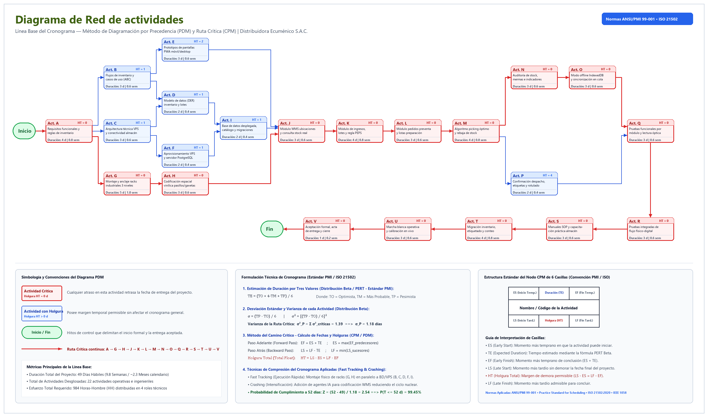
Diagrama de Red de actividades y Ruta Crítica (CPM). Red de precedencias (PDM) con 22 actividades operativas e ingenieriles, hitos de control (Inicio y Fin), ruta crítica continua destacada en rojo (duración total: 49 días hábiles / 9.8 semanas), leyenda de holguras ($HT=0$) y formulación técnica estandarizada según las normas ANSI/PMI 99-001, Practice Standard for Scheduling e ISO 21502:2020.Descargar PNG
Conforme a las convenciones internacionales de dirección de proyectos (PMI / ISO 21502), se adopta la estructura técnica estandarizada del nodo CPM de 6 casillas para la determinación rigurosa de tiempos tempranos, tardíos y márgenes de holgura:
Inicio Temprano (ES)
Duración (TE)
Final Temprano (EF)
NOMBRE / CÓDIGO DE LA ACTIVIDAD
Inicio Tardío (LS)
Holgura Total (HT)
Final Tardío (LF)
Aplicando el Paso hacia Adelante (Forward Pass) para determinar las fechas tempranas ($ES, EF$), y el Paso hacia Atrás (Backward Pass) para determinar las fechas tardías ($LF, LS$) y la Holgura Total ($ ext{HT} = LS - ES = LF - EF$), se obtiene la matriz de cálculo matemático CPM:
Act.
Nombre de la Actividad
$T_E$ (Días)
Dur. (Sem.)
ES
EF
LS
LF
Holgura (HT)
¿Es Crítica?
A
Requisitos funcionales y reglas de negocio del almacén
4.0
0.8 sem
0.0
4.0
0.0
4.0
0.0
SÍ (CRÍTICA)
B
Flujos de inventario, zonificación ABC y casos de uso
3.0
0.6 sem
4.0
7.0
5.0
8.0
1.0
No
C
Arquitectura técnica Cloud VPS y conectividad Wi-Fi
3.0
0.6 sem
4.0
7.0
5.0
8.0
1.0
No
D
Modelo de datos relacional (DER) de inventario y lotes
2.0
0.4 sem
7.0
9.0
8.0
10.0
1.0
No
E
Prototipos de interfaces de usuario PWA asistidos por IA
3.0
0.6 sem
7.0
10.0
9.0
12.0
2.0
No
F
Aprovisionamiento de servidor Cloud VPS y PostgreSQL
2.0
0.4 sem
7.0
9.0
8.0
10.0
1.0
No
G
Montaje mecánico y anclaje de racks industriales de 3 niveles
5.0
1.0 sem
4.0
9.0
4.0
9.0
0.0
SÍ (CRÍTICA)
H
Codificación espacial vinílica de pasillos, columnas y gavetas
3.0
0.6 sem
9.0
12.0
9.0
12.0
0.0
SÍ (CRÍTICA)
I
Base de datos desplegada, catálogo SKUs y migraciones
2.0
0.4 sem
9.0
11.0
10.0
12.0
1.0
No
J
Módulo WMS de ubicaciones espaciales y consulta en tiempo real
3.0
0.6 sem
12.0
15.0
12.0
15.0
0.0
SÍ (CRÍTICA)
K
Módulo de ingresos de mercadería, control de lotes y regla PEPS
4.0
0.8 sem
15.0
19.0
15.0
19.0
0.0
SÍ (CRÍTICA)
L
Módulo de pedidos de preventa y listas consolidadas
3.0
0.6 sem
19.0
22.0
19.0
22.0
0.0
SÍ (CRÍTICA)
M
Algoritmo de picking secuencial optimizado y rebaja de stock
4.0
0.8 sem
22.0
26.0
22.0
26.0
0.0
SÍ (CRÍTICA)
N
Módulo de auditoría de inventario, mermas e indicadores clave
3.0
0.6 sem
26.0
29.0
26.0
29.0
0.0
SÍ (CRÍTICA)
O
Módulo offline-first con IndexedDB y sincronización en cola
3.0
0.6 sem
29.0
32.0
29.0
32.0
0.0
SÍ (CRÍTICA)
P
Módulo de confirmación de despacho y rotulado de bultos
2.0
0.4 sem
26.0
28.0
30.0
32.0
4.0
No
Q
Pruebas funcionales unitarias por módulo y lectura óptica
3.0
0.6 sem
32.0
35.0
32.0
35.0
0.0
SÍ (CRÍTICA)
R
Pruebas integradas de flujo continuo físico-digital en piso
3.0
0.6 sem
35.0
38.0
35.0
38.0
0.0
SÍ (CRÍTICA)
S
Elaboración de manuales SOP y capacitación práctica al personal
3.0
0.6 sem
38.0
41.0
38.0
41.0
0.0
SÍ (CRÍTICA)
T
Migración, etiquetado masivo y conteo físico inicial de stock
4.0
0.8 sem
41.0
45.0
41.0
45.0
0.0
SÍ (CRÍTICA)
U
Marcha blanca operativa y calibración en vivo (5 días piloto)
3.0
0.6 sem
45.0
48.0
45.0
48.0
0.0
SÍ (CRÍTICA)
V
Acta de aceptación formal, entrega de llaves y cierre del proyecto
1.0
0.2 sem
48.0
49.0
48.0
49.0
0.0
SÍ (CRÍTICA)
Demostración Formal de la Ruta Crítica (Duración Total: 49 días hábiles / 9.8 semanas): Inicio ➔ A ➔ G ➔ H ➔ J ➔ K ➔ L ➔ M ➔ N ➔ O ➔ Q ➔ R ➔ S ➔ T ➔ U ➔ V ➔ Fin.
Cualquier retraso no planificado en el montaje de los racks (G), en la rotulación de gavetas (H) o en los módulos de software en ruta crítica traslada inmediatamente la fecha final del proyecto. Por su parte, las actividades técnicas paralelas (como el modelo de base de datos D con $HT=1$ o el diseño de interfaces E con $HT=2$) disponen de holgura suficiente para absorber imprevistos sin comprometer la entrega comprometida con la gerencia de Distribuidora Ecuménico.
Análisis Probabilístico de Conclusión del Proyecto (Distribución Normal PERT):
La varianza acumulada de la ruta crítica es $\sigma_P^2 = \sum \sigma_{ ext{críticas}}^2 = 1.39 ext{ días}^2$, lo que arroja una desviación estándar del proyecto de $\sigma_P = \sqrt{1.39} = 1.18 ext{ días}$. Si la gerencia de Distribuidora Ecuménico establece una fecha contractual máxima de 52 días hábiles (~10.4 semanas laborales), el factor $Z$ se calcula como:
$$Z = rac{T_S - \mu}{\sigma_P} = rac{52 - 49}{1.18} = rac{3}{1.18} = 2.54$$
Consultando la tabla de distribución normal estándar acumulada, $P(Z \le 2.54) = 0.9945$. Es decir, el proyecto tiene un 99.45 % de probabilidad matemática de culminar a tiempo dentro del margen de 52 días laborables.
10.6 Técnicas de Optimización y Compresión del Cronograma (Normas ANSI/PMI 99-001 e ISO 21502)
De acuerdo con las directrices de optimización de tiempos estipuladas en la Guía del PMBOK® (Sección 6.5.2.6: Compresión del Cronograma) y la norma ISO 21502, se aplican dos estrategias técnicas formales de compresión para asegurar los plazos sin alterar los requerimientos de calidad:
Ejecución Rápida (Fast Tracking): Se programan las actividades de software (B, C, D, E, F y G) en paralelo con la adquisición física de los racks (H). Gracias a los agentes de Inteligencia Artificial para scaffolding de código, el software WMS se completa y espera con holgura positiva a que la infraestructura física esté anclada.
Equilibrio y Nivelación de Recursos (Resource Leveling): La cuadrilla de 4 integrantes del proyecto se distribuye tácticamente: mientras 2 integrantes lideran el montaje físico y rotulado en almacén (H e I), los otros 2 integrantes configuran la base de datos PostgreSQL en el VPS y parametrizan la PWA móvil.
10.7 Sustento Técnico de Arquitectura: Servidor Cloud VPS frente a Servidor Físico
Uno de los puntos clave evaluados para la viabilidad de la solución fue la decisión entre adquirir un servidor físico local (On-Premise) o contratar una instancia privada virtual en la nube (Cloud VPS):
Criterio Técnico
Opción 1: Servidor Físico Local (Almacén)
Opción 2: Servidor Cloud VPS (Elegida)
Inversión Inicial (CAPEX)
Desfavorable (S/ 2,800 a S/ 4,000) en hardware servidor, fuente redundante y sistema UPS de respaldo.
Óptima (S/ 0 de inversión inicial); no se inmoviliza capital en equipos que se deprecian.
Costo Operativo (OPEX)
Consumo eléctrico continuo 24/7, mantenimiento de filtros y ventiladores por polvo de almacén.
Económico (S/ 20 a S/ 25 al mes) por instancia virtual con 2GB RAM, 1 vCPU y almacenamiento NVMe.
Condiciones Ambientales
Alto Riesgo: Polvo de especias, tránsito de carretillas, vibración y riesgo de derrames de vinagre/líquidos.
Excelente: Alojado en datacenter certificado con climatización, cortafuegos y redundancia de energía.
Acceso Remoto Preventa
Requiere contratar IP pública fija corporativa y configurar NAT/VPN para que los preventistas sincronicen pedidos desde la calle.
Nativo e Inmediato: Conexión segura HTTPS con certificado SSL automático; sincronización desde cualquier bodega.
Copias de Seguridad
Manuales en discos duros externos expuestos a daño o pérdida por descuido humano.
Automatizadas: Snapshots programados diarios en la nube con recuperación ante desastres en minutos.
10.8 Presupuesto y Estructura de Costos del Proyecto (2026)
Código EDT
Rubro / Entregable Específico
Naturaleza
Costo Parcial (S/)
Total Rubro (S/)
1.2.1
3 Módulos de Racks Industriales metálicos pesados (Zonas A, B y C)
CAPEX
S/ 2,600.00
S/ 3,130.00
1.2.2
Bandejas de contención antiderrames y señalética acrílica de pasillos
CAPEX
S/ 380.00
1.2.3
Rollos de etiquetas térmicas vinílicas para pasillos, niveles y gavetas
CAPEX
S/ 150.00
1.3.1
Servidor Cloud VPS (2GB RAM, 1 vCPU, SSD NVMe) por 12 meses
OPEX
S/ 240.00
S/ 700.00
1.3.1
Dominio corporativo y gestión DNS con certificado SSL/TLS (1 año)
OPEX
S/ 60.00
1.3.4
Punto de acceso Wi-Fi 6 industrial para cobertura completa de pasillos
CAPEX
S/ 220.00
1.3.5
2 Minilectores ópticos Bluetooth tipo anillo para escaneo manos libres
CAPEX
S/ 180.00
1.1.2
Herramientas de ingeniería de software y agentes de IA para desarrollo acelerado
OPEX
S/ 150.00
S/ 350.00
1.5.3
Manuales SOP plastificados, rotulación física y refrigerios de capacitación
OPEX
S/ 200.00
1.1.3
Reserva de contingencia para imprevistos operativos y técnicos (aprox. 7.5 %)
Reserva
S/ 320.00
S/ 320.00
PRESUPUESTO TOTAL ESTIMADO DEL PROYECTO:
S/ 4,500.00
Conclusión y Viabilidad del Proyecto
Con un presupuesto de S/ 4,500.00, una duración en ruta crítica de 49 días hábiles (10 semanas) y la total documentación formal de la línea base del alcance y cronograma según las normas del PMBOK, el proyecto moderniza la operación logística de Distribuidora Ecuménico asegurando exactitud de inventario al 99 % y despachos puntuales a las 6:00 a. m.
MRJAFCAM
Escrito por
Modesto Romero Bryan Adam, Julca Achas Cristian Sebastian, Felix Cecinario Hernan y Avalos Mendoza Jeshua Raul